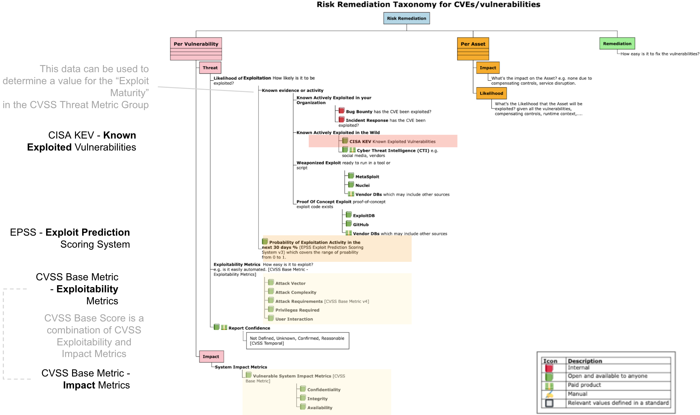
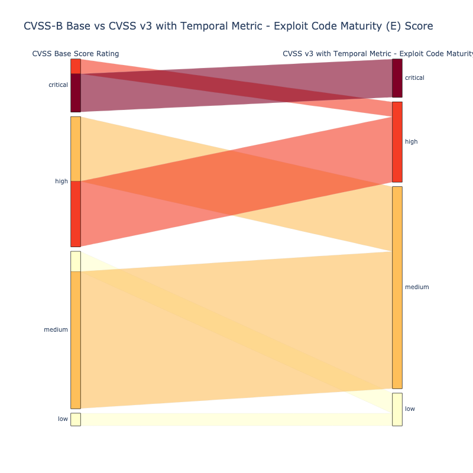
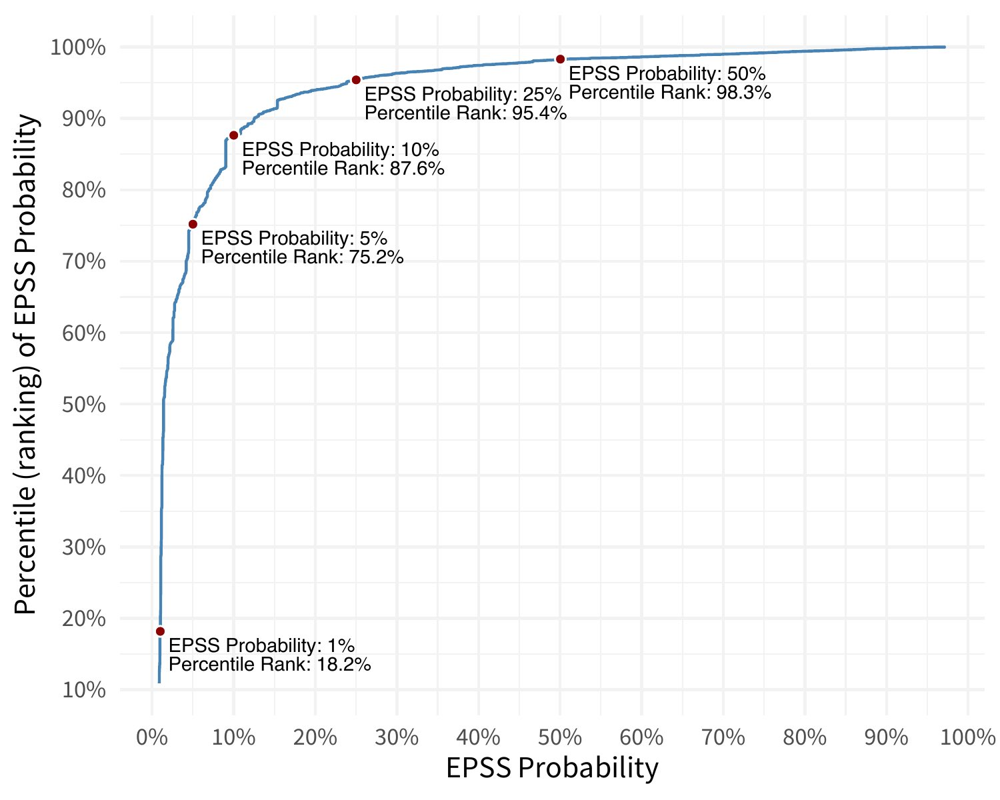
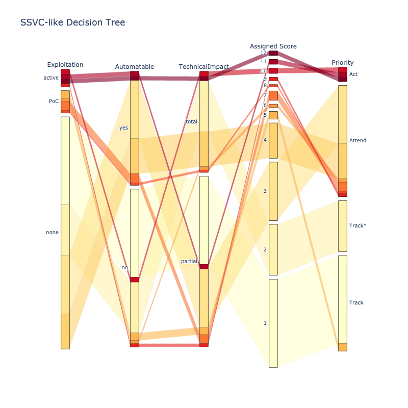

Why Read this Guide?
This guide serves as a crucial companion for cybersecurity professionals, offering an in-depth understanding of how to effectively prioritize vulnerabilities in the digital landscape.
Crafted by thought leaders in this space, the guide distills years of experience, data analysis, and interactions with standards groups and tool vendors into a practical, pragmatic, user-centric approach to cybersecurity. It illuminates the complexities of managing the ever-growing list of vulnerabilities and provides actionable strategies for mitigating real-world risks.
Through a blend of theoretical insights and real-world applications, this guide emphasizes the significance of not relying solely on conventional scoring systems like CVSS but adopting a multifaceted strategy that includes CISA KEV and EPSS for a more nuanced and effective prioritization process.
Whether you're a cybersecurity novice or a seasoned expert, this guide equips you with the knowledge and tools to navigate the treacherous world of cybersecurity threats. It is an indispensable resource for enhancing your organization's security posture and fostering a culture of proactive risk management.
Introduction ↵
Forewords¶
Jay Jacobs¶
A witty quote attributed to several notable figures including Niels Bohr, Yogi Berra and a Dutch Politician states, "It is difficult to make predictions, especially about the future." While an entertaining turn of phrase, this is exactly what every security practitioner is being asked to do everyday. Every security control, every framework we follow, every patch we prioritize is a prediction about the future. It is a statement saying out of all the possible ways we could improve security, we are predicting these actions will yield the best possible future.
The word "prediction" may generate a negative connotation for some as it conjures up visions of charlatans with crystal balls. But whether you prefer forecasting, prognostication or following your gut, it doesn't really matter. The fact remains that we must make decisions everyday about the future and typically make those decisions with incomplete information.
Everyone knows that you probably should not take a card on 17 in blackjack, and betting on a single number in roulette is a long shot. But why? Short answer is that the odds are against a positive outcome with those decisions. Yes, it is possible to get 21 by hitting on 17, and single numbers are paid out in roulette. In the long run though, the more a player can play the odds, the better they do over time. Prediction is difficult, being correct every single time about future events is just not feasible, but by digging into the data, pulling out the important signals can make your decisions better today than they were tomorrow. That's what this framework is attempting to give practitioners – an approach to reduce your uncertainty around vulnerability prioritization and push you closer towards playing the odds.
Patrick Garrity¶
Chris Madden continues to make significant contributions to the security community, having previously shared Yahoo's innovative approach to optimizing DevOps pipelines at Bsides Dublin. In this guide, Chris presents a practical and data-driven approach to risk-based prioritization of vulnerabilities.
Within these pages, readers will discover valuable insights from a practitioner's perspective, empowering them to make informed risk decisions, prioritize CVEs effectively, and implement these principles within their own environments.
Chris skillfully combines human-based logic, represented by decision trees aligned with Stakeholder-Specific Vulnerability Categorization (SSVC), with established open standards such as the Common Vulnerability Scoring System (CVSS), CISA Known Exploited Vulnerabilities (CISA KEV), and the Exploit Prediction Scoring System (EPSS). By doing so, he equips readers with a comprehensive understanding of how to leverage these standards effectively.
With a meticulous emphasis on data-driven analysis and recommendations, Chris provides depth and clarity that are essential for any modern vulnerability management program. This guide is an indispensable resource for security professionals seeking to enhance their approach to risk prioritization.
Francesco Cipollone CEO & Founder Phoenix Security ¶
Security practitioners are currently inundated by vulnerabilities and the state of prioritization does not have any guideline on how to fix vulnerabilities and where to focus.
This guide is a brilliant starting point for any practitioner that wants to apply prioritization techniques and start making data driven and risk driven decisions.
As a practitioner myself, I wish I had such a guiding group and guidance when leading vulnerability management efforts.
Special Kudos to the EPSS group and Chris Madden driving the initiative with an unbiased view and a clean, clear data driven approach.
Preface¶
I embarked on this journey because, as a Product Security engineer, my role is to enable the flow of value to our customers by helping deliver high quality software efficiently and securely.
A large part of that was to be able to prioritize the ever increasing number of published vulnerabilities (CVEs) by Real Risk.
Lots of dumb questions and data analysis later, and experience deploying Risk Based Prioritization at scale in production, this guide represents the distillation of that knowledge into a user-centric system view - what I wish I knew before I started - and learnt by interacting with other users, standards groups, and tool vendors.
The Risk Based Prioritization described in this guide significantly reduces the
- cost of vulnerability management
- risk by reducing the time adversaries have access to vulnerable systems they are trying to exploit
 Special thanks to
Special thanks to
- My family - who give life to living

- My employer Yahoo for cultivating such a rich environment for people to thrive.
- My colleague Lisa for the expert input, keeping all this real, and tolerating more dumb questions than any human should endure in one lifetime!
- The friendly vibrant community in this space - many of whom have contributed content to this guide.
Introduction¶
About this Guide
This Risk Based Prioritization Guide is a pragmatic user-centric view of Relative Risk per Vulnerability, the related standards and data sources, and how you can apply them for an effective Risk Based Prioritization for your organization.
It is written by, or contributed to, some of the thought leaders in this space for YOU.
CISA, Gartner, and others, recommend focusing on vulnerabilities that are known-exploited as an effective approach to risk mitigation and prevention, yet very few organizations do this.
Maybe because they don't know they should, why they should, or how they should? This guide will cover all these points.
After reading this guide you should be able to
- Understand Risk
- the main standards and how they fit together
- the key risk factors, especially known exploitation or likelihood of exploitation
- Prioritize CVEs by Risk
- apply this understanding to Prioritize CVEs by Risk for your organization resulting in
- a significant reduction in your security effort
- a significant improvement in your security posture by remediating the higher risk vulnerabilities first
- apply this understanding to Prioritize CVEs by Risk for your organization resulting in
- Apply the provided guidance to your environment
- the source code used to do much of the analysis in this guide is provided - so you can apply it to your internal data
- compare what other users, and tool vendors, are doing for Risk Based Prioritization so you can compare it to what you're doing
- ask more informed questions of your tool/solution provider
Overview¶
The guide covers:
- Risk
- The Vulnerability Landscape covering the main standards and how they fit together
- What these standards and risk factors look like for different populations of CVEs
- How to use the standards and data sources in your environment
- How the standards and data sources are being used using real examples
- How some vendors are using them in their tools
- How some users are using them in their environments
- Applying all this for Risk Based Prioritization
- Showing 3 different Risk Based Prioritization schemes with data and code.
The guide includes Applied material
on a menu item indicates the content is more hands on - applying the content from the guide.
"🧑‍💻 Source Code" on a page is a link to the source code used to generate any plots or analysis on public data.
Intended Audience¶
The intended audience is people in these roles:
- Product Engineer: the technical roles: Developer, Product Security, DevSecOps
- Security Manager: the non-technical business roles: includes CISO
- Cyber Defender: network defenders, IT/infosec
- Tool Provider: Tool providers: Tool Vendors, open source tools,...
This is a subset of the Personas/Roles defined in the Requirements chapter.
No prior knowledge is assumed to read the guide - it provides just enough information to understand the advanced topics covered.
A basic knowledge of Jupyter Python is required to run the code (with the data provided or on your data).
How to Use This Guide¶
- For the short version, read these sections and understand the Risk Based Prioritization Models:
- For a deeper understanding read the full guide.
- To get the most out of this guide, also play with the code - and analyze your data.
Each of the Risk Based Prioritization Models above use similar risk factors (known exploitation and likelihood of exploitation, with variants of CVSS base metrics parameters or scores) but in very different ways to rank/score the risk/priority. The outcome is the same - a much more granular prioritization at the high end of risk than offered by CVSS.
If you're looking for the "easy button", or the one scheme to rule them all for Risk Based Prioritization, you won't find it (here or anywhere else).
Who Contributed to This Guide¶
Various experts and thought leaders contributed to this guide, including those that:
- developed the standards or solutions described in this guide as used in industry
- have many years of experience in vulnerability management across various roles
How to Contribute to This Guide¶
You can contribute content or suggest changes:
- Suggest content
- Report Errors, typos
- If you're a tool/solution vendor, and would like to provide anonymized, sanitized data - or what scoring system you use and why
- If you'd like to share what your organization is doing (anonymized, sanitized as required) as a good reference example
Writing Style¶
The "writing style" in this guide is succinct, and leads with an opinion, with data and code to back it up i.e. data analysis plots (with source code where possible) and observations and takeaways that you can assess - and apply to your data and environment. This allows the reader to assess the opinion and the code/data and rationale behind it.
Different, and especially opposite, opinions with the data to back them up, are especially welcome! - and will help shape this guide.
Quote
If we have data, let’s look at data. If all we have are opinions, let’s go with mine.
Source Code¶
-
 See Source Code for the code
See Source Code for the code- This includes the data used in the analysis (downloaded Jan 13) and how to download it
- This code is licensed under the Apache 2 Open Source License.
Alternative or Additional Guidance¶
This guide is not an introductory or verbose treatment of topics with broader or background context. For that, consider the following (no affiliation to the authors):
- Effective Vulnerability Management: Managing Risk in the Vulnerable Digital Ecosystem
- Software Transparency: Supply Chain Security in an Era of a Software-Driven Society
- Software Supply Chain Security: Securing the End-to-end Supply Chain for Software, Firmware, and Hardware
Notes¶
Notes
- This guide is not affiliated with any Tool/Company/Vendor/Standard/Forum/Data source.
- Mention of a vendor in this guide is not a recommendation or endorsement of that vendor.
- The choice of vendors was determined by different contributors who had an interest in that vendor.
- Mention of a vendor in this guide is not a recommendation or endorsement of that vendor.
- This guide is a living document i.e. it will change and grow over time - with your input.
- You are responsible for the prioritization and remediation of vulnerabilities in your environment and the associated business and runtime context which is beyond the scope of this guide.
Contributors¶
Thanks to all who contributed!
Many experts volunteered their time and knowledge to this guide - and for that we all benefit and we're truly grateful!
In alphabetical order by first name:
- Allen Householder, CERT
- Aruneesh SalhotraÂ
- Buddy BergmanÂ
- Casey Douglas
- Chris Madden, Yahoo
- Christian Heinrich
- Denny WanÂ
- Derrick Lewis
- Eoin Keary, Edgescan
- Jay Jacobs, Cyentia, EPSS Co-creator
- Jeffrey Martin
- Jerry GamblinÂ
- Jonathan Spring, CISA
- Joseph ManahanÂ
- Maor Kuriel
- Patrick Garrity, VulnCheck
- Sasha Romanosky, EPSS Co-creator, CVSS author
- Stephen Shaffer, Peloton
- Steve Finegan
Scope¶
Scope of this Guide
The scope for this guide is
- CVEs only - not vulnerabilities that don't have CVEs, not Zero Days (until they get a CVE)
- Per Vulnerability - not asset/business/runtime/other organization-specific context
CVEs¶
Not all vulnerabilities or exploits have CVEs.
However, many do, and we can use the data associated with a CVE for Risk Based Prioritization.
Per Vulnerability¶
The scope is - "Per Vulnerability" branch in the diagram below - Generic vulnerability data - not the organization-specific context
A different way of looking at this is that this guide (and the prioritization schemes herein), can be used as a first pass triage and prioritization of vulnerabilities, before the overall asset-specific business and runtime context, and remediation context, is considered, and all the context-specific dependencies that go with that.
In other words, Relative Risk per vulnerability.


Having good security hygiene, and a good understanding of your data, is recommended independent of Risk Based Prioritization
Independent of the Risk Based Prioritization in this guide:
- Good Security hygiene e.g. keeping software up to date, is effective in preventing and remediating vulnerabilities.
- Understanding your vulnerability data, and root causes, should inform your remediation.
See where this guide fits in terms of overall Risk Remediation
A more complete picture of Risk Remediation Asset and Remediation branches is shown below.
- While these are out of scope for this guide, it may be useful as a reference for your Risk Remediation.

Source Code and Data¶
Overview
This section gives an overview of the data and the notebooks (code + documentation) for the analysis that is part of this guide:
- Running the Code - the environments it can be run
- Data Sources - the public data sources used
- Analysis - the code for the analysis, the output of which is used in this guide
Running the Code¶
The source code provided with this guide is available as Jupyter Notebooks.
These can be run
- locally or offline (requires that you have a Jupyter Notebooks environment setup)
- online via browser in Colab. (No environment setup required)
The source code notebooks are available in Colab to run from your browser
Quote
Colab, or "Colaboratory", allows you to write and execute Python in your browser, with
- Zero configuration required
- Access to GPUs free of charge
- Easy sharing
Data Sources¶
| Data Source | Detail | ~~ CVE count K |
|---|---|---|
| CISA KEV | Active Exploitation | 1 |
| EPSS | Predictor of Exploitation | 220 |
| Metasploit modules | Weaponized Exploit | 3 |
| Nuclei templates | Weaponized Exploit | 2 |
| ExploitDB | Published Exploit Code | 25 |
| NVD CVE Data | NVD CVEs | 220 |
| Qualys TruRisk Report | The 2023 Qualys TruRisk research report lists 190 CVEs from 2022 with QVS scores | .2 |
| Microsoft Security Response Center (MSRC) | CVEs Exploited and with Exploitability Assessment | .2 |
Analysis¶
See analysis directory for these files.
- enrich_cves.ipynb
- Take the data sources from data_in/
- Enrich the CVE data from NVD with the other data sources
- Add an "Exploit" column to indicate the source of the exploitability (used later to set colors of CVE data in plots)
- store the output in data_out/nvd_cves_v3_enriched.csv.gz
- kev_epss_cvss.ipynb
- Read the enriched CVE data from data_out/CVSSData_enriched.csv.gz
- Read the data from CISA KEV alert reports in ./data_in/cisa_kev/
- Plot CISA KEV datasets showing EPSS, CVSS by source of the exploitability
- Write data_out/cisa_kev/csa/csa.csv.gz which is the CISA KEV CyberSecurity Alerts (CSA) subset with EPSS and other data
- qualys.ipynb
- Read the enriched CVE data from data_out/CVSSData_enriched.csv.gz
- Read the data from ./data_in/qualys
- Plot Qualys dataset showing EPSS, CVSS by source of the exploitability
- Write data_out/qualys/qualys.csv.gz which is the Qualys data with EPSS and other data
- msrc.ipynb
- Read the enriched CVE data from data_out/CVSSData_enriched.csv.gz
- Read the data from ./data_in/msrc
- Plot Microsoft Exploitability Index dataset showing EPSS, CVSS by source of the exploitability
- Write data_out/msrc/msrc.csv.gz which is the MSEI data with EPSS and other data
CISA SSVC Decision Trees¶
See cisa_ssvc_dt directory for these files.
CISA SSVC Decision Tree From Scratch Example Implementation¶
- Read the enriched CVE data from data_out/CVSSData_enriched.csv.gz
- Read the Decision Tree definition cisa_ssvc_dt/DT_rbp.csv
- Define the Decision Logic for the Decision Nodes
- Calculate the Decision Node Values for all CVEs
- Do some Exploratory Data Analysis with Venn Diagrams to understand our data
- Calculate the Output Decision from the Decision Node Values
- Plot Flow of All CVEs across the Decision Tree aka Sankey
- Read the Sankey Diagram template definition cisa_ssvc_dt/DT_sankey.csv
- Triage some CVEs
- Read a list of CVEs to triage cisa_ssvc_dt/triage/cves2triage.csv
- Get Decisions
- Plot
CISA SSVC Decision Tree Analysis for Feature Importance¶
- Read the Decision Tree definition cisa_ssvc_dt/DT_rbp.csv
- Perform Feature Importance using 2 methods
- Permutation Importance
- Drop-column Importance
See https://github.com/CERTCC/SSVC/issues/309 for the suggestion to add drop column importance to CISA SSVC.
Getting Data from Data Sources¶
A snapshot of the data used for this guide is available
A snapshot of this data is already available with the source in data_in
- A date.txt file is included in each folder with the data that contains the date of download.
But you can download current data as described here.
- get_data.sh gets the data that can be downloaded automatically and used as-is.
- Other data is manually downloaded - see instructions below.
- MSRC
- ExploitDB
- GPZ
- Larger files are gzip'd
National Vulnerability Database (NVD)¶
Get NVD data automatically
- A notebook or script in nvd downloads the NVD data.
- The data is output to data_out/CVSSData.csv.gz
- Note: The download method used will be deprecated some time after Dec 2023 per https://nvd.nist.gov/vuln/data-feeds
Google Project Zero (GPZ)¶
See 0day "In the Wild" GoogleSheet
- Select "All" tab.
- File - Download as csv
Microsoft Security Response Center (MSRC)¶
- Go to https://msrc.microsoft.com/update-guide/vulnerability
- Edit columns - ensure these columns are selected "Exploitability Assessment" and "Exploited"
- Download
Qualys TruRisk Report¶
The CVE data was extracted from the Qualys TruRisk Report PDF. This data is static so a date.txt is not included.
ExploitDB¶
- Download https://gitlab.com/exploit-database/exploitdb/-/blob/main/files_exploits.csv (manually for now - credentials required for automation)
- Extract the CVEs using the script in the directory i.e. some entries don't have CVEs - and have only Open Source Vulnerability Database (OSVDB) entries instead.
Other Vulnerability Data Sources¶
See other vulnerability data sources that are not currently used here.
Ended: Introduction
Risk ↵
Vulnerability Landscape¶
Overview
A plot of CVE counts per year helps us understand why we need to be able to effectively prioritize CVEs (by Risk).
To do that we need to understand the building blocks we have to work with.
This section gives
- an overview of how the main relevant vulnerability standards fit together
- for recording and ranking vulnerabilities and their exploitation status or likelihood
- the characteristics of vulnerabilities
- a timeline
- with the count, and cumulative count, of CVEs over time (based on the Published date of each CVE)
- when different standards were released
Timeline¶

Vulnerability Standards¶

Key Risk Factor Standards¶
Quote
“CWE is the root mistake, which can lead to a vulnerability (tracked by CVE in some cases when known), which can be exploited by an attacker (using techniques covered by CAPEC)”, which can lead to a Technical Impact (or consequence), which can result in a Business Impact
-
“CWE focuses on a type of mistake that, in conditions where exploits will succeed, could contribute to the introduction of vulnerabilities within that product.”
-
“A vulnerability is an occurrence of one or more weaknesses within a product, in which the weakness can be used by a party to cause the product to modify or access unintended data, interrupt proper execution, or perform actions that were not specifically granted to the party who uses the weakness.†https://cwe.mitre.org/documents/cwe_usage/guidance.html
CVE - CWE - Technical Impact
- A CVE may have zero or more CWEs associated with it e.g. Log4Shell CVE-2021-44228 has 4 CWEs
- A CWE may have zero or more Common Consequences/Technical Impacts associated with it e.g. Log4Shell CVE-2021-44228 has 2
- A CWE may be associated with zero or more CVEs.
To understand MITRE CAPEC vs MITRE ATT&CK, see https://capec.mitre.org/about/attack_comparison.html.
Quote
“NVD is using CWE as a classification mechanism that differentiates CVEs by the type of vulnerability they represent.”
“The NVD makes use of a subset of the entire CWE List, which is enumerated by the CWE-1003 (Weaknesses for Simplified Mapping of Published Vulnerabilities) view. NVD analysts will associate the most specific CWE value within the CWE-1003 view based on the publicly available information at the time of analysis.†https://nvd.nist.gov/vuln/cvmap/How-We-Assess-Acceptance-Levels, https://nvd.nist.gov/vuln/categories
Takeaways
- The count of published CVEs per year is increasing at a very significant rate.
- Organizations need an effective prioritization method to know what to remediate first.
- CISA KEV is a source of vulnerabilities that have been exploited in the wild. EPSS gives the probability a vulnerability will be exploited in the wild (in the next 30 days).
- CISA SSVC is an alternative to CVSS.
- “CWE is the root mistake, which can lead to a vulnerability (tracked by CVE in some cases when known), which can be exploited by an attacker (using techniques covered by CAPEC)”, which can lead to a Technical Impact (or consequence), which can result in a Business Impact
- NVD uses CWE-1003 (Weaknesses for Simplified Mapping of Published Vulnerabilities)
- A CVE may have zero or more CWEs associated with it e.g. Log4Shell has 4 CWEs
- A CWE may have zero or more Common Consequences/Technical Impacts associated with it e.g. Log4Shell has 2
- A CWE may be associated with zero or more CVEs e.g. CWE-917 is associated with CVE-2023-22665, CVE-2023-41331, CVE-2023-41331, and many other CVEs.
Understanding Risk¶
Overview
To understand how to Prioritize CVEs by Risk, we need to understand Risk, and how we can use the building blocks (standards, key risk factors) to inform risk.
This section gives a
- Definition of Risk and the key risk factors
- Risk Taxonomy or orientation map, showing where CVSS, CISA KEV, EPSS fit
- The different data sources that can be used to inform the key risk factors
Risk Definition¶
Risk Definition from NIST Special Publication 800-30 r1 Guide for Conducting Risk Assessments
Risk is per Asset and depends on Impact of a Vulnerability being exploited by a Threat
- RISKÂ A measure of the extent to which an
entity is threatened by a potential circumstance or event, and
typically is a function of:Â
- the adverse impact, or magnitude of harm, that would arise if the circumstance or event occurs; andÂ
- the likelihood of occurrence.
- Threat the potential for a threat-source to successfully exploit a particular information system vulnerability.
- Vulnerability Weakness in an information system, system security procedures, internal controls, or implementation that could be exploited by a threat source
- Impact The magnitude of harm that can be expected to result from the consequences of unauthorized disclosure of information, unauthorized modification of information, unauthorized destruction of information, or loss of information or information system availability.
- Asset The data, personnel, devices, systems, and facilities that enable the organization to achieve business purposes.

Risk Remediation Taxonomy¶
 "Risk Remediation Taxonomy based on a BSides Conference presentation"
"Risk Remediation Taxonomy based on a BSides Conference presentation"
Risk is per Asset and depends on the Impact of a Vulnerability being exploited by a Threat
- The Vulnerability branch indicates there can be multiple
vulnerabilities for a given Asset
- Each vulnerability can be considered separately with its
associated Threat and Impact
- The Threat ("the potential for a
threat-source to successfully exploit a particular
information system vulnerability") depends on
- Evidence of Exploit activity, or Probability of Exploit
activity
- e.g. a vulnerability is known actively exploited in the wild
- e.g. a vulnerability has no known exploitation or known proof of concept or any known implementation
- The Exploitability of the Vulnerability
- e.g. a vulnerability that can be exploited remotely automatically via a generic tool/script with no permissions or user interaction required has high Exploitability.
- e.g. a vulnerability that requires local access, special permissions, bypass of a security feature, and user interaction, has low Exploitability.
- Evidence of Exploit activity, or Probability of Exploit
activity
- The Threat ("the potential for a
threat-source to successfully exploit a particular
information system vulnerability") depends on
- Each vulnerability can be considered separately with its
associated Threat and Impact
- The Asset branch is for one Asset
- An Asset can be impacted by multiple Vulnerabilities and Threats (the Vulnerability and Threat red boxes include multiple sections to convey there are multiple)
- Likelihood of Exploitation can also be viewed from an Asset point of view also (i.e. for all Threats and Vulnerabilities that affect that asset)
- Remediation
- Remediation is part of the overall Risk Remediation picture - but will not be covered here.
Where CVSS, EPSS, CISA KEV Fit¶
Adding more detail to the Vulnerability branch, to show where CVSS, EPSS, CISA KEV fit...
Threat Likelihood of Exploitation Data Sources¶
The Threat "Likelihood of Exploit" branch items are arranged by most likely on top Â
- Known Actively Exploited in your organization
- If a Vulnerability was previously exploited in your organization, then it's reasonable to think that Vulnerability is most likely to be exploited again in your organization in the future.
- Known Actively Exploited in the wild
- CISA KEV lists a subset of known actively exploited Vulnerabilities in the wild.
- VulnCheck KEV lists additional known actively exploited Vulnerabilities in the wild (and includes CISA KEV CVEs)
- There isn't an authoritative common public list of ALL Vulnerabilities that are Known Actively Exploited in the wild.
- Weaponized Exploit
- A Vulnerability with a "Weaponized Exploit" (but not yet Known
Exploited) is more likely to be exploited than a Vulnerability
with "Proof Of Concept Exploit" available
- "vulnerabilities with published exploit code are as much as 7 times as likely to be exploited in the wild"
- "If it’s ‘weaponized’ (think metasploit), the odds of a vulnerability being exploited in the wild really balloon from about 3.7% to 37.1%." Per Jay Jacobs, CyentiaÂ
- A Vulnerability with a "Weaponized Exploit" (but not yet Known
Exploited) is more likely to be exploited than a Vulnerability
with "Proof Of Concept Exploit" available
- Proof Of Concept Exploit
- ExploitDB is an example of where Vulnerability Proof Of Concept Exploits are available.
- EPSS Probability of Exploitation
- The EPSS score covers the range of Likelihood of Exploitation from 0 to 100%.
Why Should I Care?¶
Prioritizing by exploitation reduces cost and risk
Prioritizing vulnerabilities that are being exploited in the wild, or are more likely to be exploited, reduces the
- cost of vulnerability management
- risk by reducing the time adversaries have access to vulnerable systems they are trying to exploit
Quote
-
"many vulnerabilities classified as “critical†are highly complex and have never been seen exploited in the wild - in fact, less than 4% of the total number of CVEs have been publicly exploited" (see BOD 22-01: Reducing the Significant Risk of Known Exploited Vulnerabilities).
Cybersecurity and Infrastructure Security Agency emphasizes prioritizing remediation of vulnerabilities that are known exploited in the wild:
-
"As a top priority, focus your efforts on patching the vulnerabilities that are being exploited in the wild or have competent compensating control(s) that can. This is an effective approach to risk mitigation and prevention, yet very few organizations do this. This prioritization reduces the number of vulnerabilities to deal with. This means you can put more effort into dealing with a smaller number of vulnerabilities for the greater benefit of your organization's security posture."Â
How Many Vulnerabilities are Being Exploited?¶
Only about 5% or fewer of all CVEs have been exploited
- “Less than 3% of vulnerabilities have weaponized exploits or evidence of exploitation in the wild, two attributes posing the highest risk,†Qualys
- “Only 3 percent of critical vulnerabilities are worth prioritizing,†https://www.datadoghq.com/state-of-application-security/
- “Less than 4% of the total number of CVEs have been publicly exploited”, CISA KEV
- “We observe exploits in the wild for 5.5% of vulnerabilities in our dataset,†Jay Jacobs, Sasha Romanosky, Idris Adjerid, Wade Baker
In contrast, for CVSS (Base Scores):
- ~15% of CVEs are ranked Critical (9+)
- ~65% of CVEs are ranked Critical or High (7+)
- ~96% of CVEs are ranked Critical or High or Medium (4+)
What Vulnerabilities are Being Exploited?¶
There isn't an authoritative common public list of ALL CVEs that are Known Actively Exploited in the wild
There is considerable variation in the
- Total Number of Vulnerabilities being Exploited from different sources (per above)
- The criteria for "Known Actively Exploited in the wild".
CISA KEV includes a subset of Vulnerabilities that are Known-Exploited in the wild.
CISA KEV currently includes ~1.1K CVEs, and defines criteria for inclusion
CISA Known Exploited Vulnerabilities Catalog (CISA KEV) is a source of vulnerabilities that have been exploited in the wild
There's several criteria including:
Quote
"A vulnerability under active exploitation is one for which there is reliable evidence that execution of malicious code was performed by an actor on a system without permission of the system owner."
"Events that do not constitute as active exploitation, in relation to the KEV catalog, include:
- Scanning
- Security research of an exploit
- Proof of Concept (PoC)
EPSS provides a probability of exploitation for all published CVEs (in the next 30 days)
For EPSS, the criteria for exploit evidence (used to feed the model) is a detection of traffic matching an intrusion detection/prevention systems (IDS/IPS), or honeypot, signature (not a successful exploitation).
Scanning would likely trigger a detection. In contrast, For CISA KEV, scanning does not constitute as active exploitation.
Various CTI lists other Known-Exploited CVEs
There are numerous Cyber Threat Intelligence sources e.g. vendors, publicly available data, that provide lists of CVEs that are Known-Exploited in addition to those listed on CISA KEV.
CVSS¶
CVSS Base Score should not be used alone to assess risk!
CVSS Base Score¶
Quote
CVSS Base (CVSS-B) scores are designed to measure the severity of a vulnerability and should not be used alone to assess risk. https://www.first.org/cvss/v4.0/user-guide#CVSS-Base-Score-CVSS-B-Measures-Severity-not-Risk
The CVSS Base score is not a good indicator of likelihood of exploit (it is not designed or intended to be)
- "There’s no inherent correlation between the vulnerability and if threat actors are exploiting them in terms of those severity ratings" Gartner, Nov 2021
- "CVSS score performs no better than randomly picking vulnerabilities to remediate and may lead to negligible risk reductions" Comparing Vulnerability Severity and Exploits Using Case-Control Studies, 2014
Quote
The Base metric group represents the intrinsic characteristics of a vulnerability that are constant over time and across user environments. It is composed of two sets of metrics: the Exploitability metrics and the Impact metrics.
- The Exploitability metrics reflect the ease and technical means by which the vulnerability can be exploited. That is, they represent characteristics of the “thing that is vulnerable”, which we refer to formally as the “vulnerable system”.
- The Impact metrics reflect the direct consequence of a successful exploit, and represent the consequence to the “things that suffer the impact”, which may include impact on the vulnerable system and/or the downstream impact on what is formally called the “subsequent system(s)”.
The CVSS Threat Metric Group contains an Exploit Maturity but it is the responsibility of the CVSS Consumer/user to populate the values
CVSS Exploit Maturity¶
See section CVSS Exploit Maturity for more details.
Quote
This metric measures the likelihood of the vulnerability being attacked, and is based on the current state of exploit techniques, exploit code availability, or active, “in-the-wild†exploitation. Public availability of easy-to-use exploit code or exploitation instructions increases the number of potential attackers by including those who are unskilled. Initially, real-world exploitation may only be theoretical. Publication of proof-of-concept exploit code, functional exploit code, or sufficient technical details necessary to exploit the vulnerability may follow. Furthermore, the available exploit code or instructions may progress from a proof-of-concept demonstration to exploit code that is successful in exploiting the vulnerability consistently. In severe cases, it may be delivered as the payload of a network-based worm or virus or other automated attack tools.
The Threat Likelihood of Exploitation Data Sources can be used here.
If there is an absence of exploitation evidence, then EPSS can be used to estimate the probability it will be exploited
EPSS and Exploitation Evidence¶
"If there is evidence that a vulnerability is being exploited, then that information should supersede anything EPSS has to say, because again, EPSS is pre-threat intel. If there is an absence of exploitation evidence, then EPSS can be used to estimate the probability it will be exploited." https://www.first.org/epss/faq
The "Known Evidence or Activity branch" lists data sources where we can get that evidence of exploitation.
Zero Days¶
Quote
EPSS scores won’t be available for Zero Days (because EPSS depends on the CVE being published and it can take several days for the associated CVE to be published).
"The State of Exploit Development: 80% of Exploits Publish Faster than CVEs".
Quote
A zero-day vulnerability is a flaw in software or hardware that is unknown to a vendor prior to its public disclosure, or has been publicly disclosed prior to a patch being made available. As soon as a zero day is disclosed and a patch is made available it, of course, joins the pantheon of known vulnerabilities.
Don’t go chasing zero days, patch your known vulnerabilities instead….
Vulnerabilities increase risk, whether or not they start as zero days. We advise organizations to operate with a defensive posture by applying available patches for known, exploited vulnerabilities sooner rather than later.
Quote
Zero day vulnerabilities made up only approximately 0.4% of vulnerabilities during the past decade. The amount spent on trying to detect them is out of kilter with the actual risks they pose. This is compared with the massive numbers of breaches and infections that come from a small number of known vulnerabilities that are being repeatedly exploited. As a top priority, focus your efforts on patching the vulnerabilities that are being exploited in the wild or have competent compensating control(s) that can. This is an effective approach to risk mitigation and prevention, yet very few organizations do this.
Focus on the Biggest Security Threats, Not the Most Publicized, Gartner, Nov 2017
Takeaways
- CVSS or EPSS should not be used alone to assess risk - they can be used together:
- CVSS Base Score is a combination of Exploitability and Impact
- Various data sources can be used as evidence of exploitation activity or likelihood of exploitation activity - but there isn't
- a single authoritative source
- an industry standard on how to do this
- EPSS should be used with other exploitation evidence; if there is an absence of exploitation evidence, then EPSS can be used to estimate the probability it will be exploited.
- EPSS scores won't be available for Zero-Days
- "Don’t go chasing zero days, patch your known vulnerabilities instead"
- It is the responsibility of the CVSS Consumer/user to populate the CVSS Exploit Maturity values i.e. unlike the CVSS Base Score, these are not provided.
- Criteria for "Exploitation" are different for EPSS and CISA KEV.
Likelihood of Exploitation Populations¶
Overview
Our ability to remediate depends on
- the priority (risk) of CVEs - the ones we want to remediate based on our security posture
- In the Understanding Risk chapter, we saw the ordered Likelihood of Exploitation for different populations of CVEs in the Risk Remediation Taxonomy.
- the number of CVEs for that priority (risk) - that we have the capacity/resources to fix
This section gives a
- view of the sizes of those populations
- the data sources for those populations
Population Sizes¶
Representative sizes and overlaps shown as there isn't authoritative exact data.
- ~~50% (~~100K) of all CVEs (~200K) have known exploits Proof Of Concepts available (based on a commercial CTI product used by the author)
- ~~5% (~10K) of all CVEs are actively exploited
- There isn't a single complete authoritative source for these CVEs
- ~~0.5% (~1K) of all CVEs (~200K) are in CISA Known Exploited Vulnerability
CVEs represent a subset of all vulnerabilities. Your organization will have a subset of these CVEs
- Not all exploits are public/known.
- Not all public exploits have CVEs.
- A typical enterprise will have a subset of exploits/CVEs: ~~10K order of magnitude unique CVE IDs.
- The counts of these unique CVE IDs may follow a Pareto type distribution i.e. there will be many instances of a small number of CVE IDs.
Likelihood of Exploitation Data Sources¶
This table shows the number of CVEs (from all published CVEs) that are listed in that data source:
| Data Source | Detail | ~~ CVE count K |
|---|---|---|
| CISA KEV | Active Exploitation | 1 |
| VulnCheck KEV | Active Exploitation | 2 |
| Metasploit modules | Weaponized Exploit | 3 |
| Nuclei templates | Weaponized Exploit | 2 |
| ExploitDB | Published Exploit Code | 25 |
Note
VulnCheck KEV was launched just before this guide was released. So it has not been included in any analysis for this guide initial release - but will likely be for future releases.
EPSS Scores are available for all published CVEs - and cover the range of Likelihood of Exploitation from 0 to 100%.
The population sizes for Likelihood of Exploitation decrease, as Likelihood of Exploitation increases
The population sizes for higher Likelihood of Exploitation (Active ~~5%, Weaponized ~~3%) are relatively small compared to Proof Of Concept (~~50%), and All CVEs (100%).
This table lists the main public data sources.
Other Vulnerability Data Sources¶
In addition, there are many more Vulnerability Data Sources:
- Open Source vulnerability database
- "This infrastructure serves as an aggregator of vulnerability databases that have adopted the OSV schema, including GitHub Security Advisories, PyPA, RustSec, and Global Security Database, and more."
- Red Hat Security Advisories/RHSB
- Go Vulnerability Database
- Dell Security Advisory
- Qualys Vulnerability database
- Tenable Vulnerability database
- Trickest "Almost every publicly available CVE PoC"
Cyber Threat Intelligence vendors may provide an aggregation of this data.
Takeaways
- There isn't a single complete authoritative source for all CVEs that are actively exploited - so we need to use multiple incomplete imperfect sources.
- The population sizes for higher Likelihood of Exploitation (Active ~~5%, Weaponized ~~3%) are relatively small compared to Proof Of Concept (~~50%), and All CVEs (100%).
- Not all vulnerabilities are public/known, and for those that are known, not all of them have CVEs assigned.
- A typical enterprise will have a subset of exploits/CVEs: ~~10K order of magnitude unique CVE IDs.
- The counts of these unique CVE IDs may follow a Pareto type distribution i.e. for your environment, there will likely be many instances of a small number of CVE IDs.
Applied Back of the napkin Likelihood of Exploitation Model¶
Overview
As users, we want to know which CVEs we need to remediate first based on our available resources/capacity to remediate them.
To develop an understanding of Risk Based Prioritization, we'll build a back of the napkin Risk Based Prioritization model that focuses on Likelihood of Exploitation.
We'll look at the tradeoff between Likelihood of Exploitation vs how many CVEs we need to fix.
When we look at Risk Based Prioritization models in products and production later in this guide; you'll be able to recognize many of the elements in our back of the napkin model
Back of the napkin Model¶
For this back of the napkin model:
- We use Threat Likelihood of Exploitation per our Risk Taxonomy
-
For this back of the napkin model, let's assume that
-
The odds of a vulnerability being exploited are in the order in the diagram (highest risk on top):
-
The probabilities quoted in section "Threat Likelihood of Exploit" are correct (though exact figures don't matter on this back of the napkin - the point is there's a significant difference)
- 37.1% it the vulnerability is weaponized
- 3.7% if a Proof Of Concept exists
- For counts of CVEs
- the counts of CVEs are per "Likelihood of Exploitation Populations" diagram
- there's a relatively small number of vulnerabilities that have been Known Exploited in our organization i.e. 10 or less
- We're looking at all published CVEs.
- You could apply this back of the napkin model to the subset of CVEs in your environment.
- We'll use a very exaggerated figure of ~~20K for CVEs that
have weaponized exploits or evidence of exploitation in the
wild (as it's a back of the napkin exercise and we want to
understand if our model is still useful in a well beyond
worst case scenario):
- So that gives ~~10% of CVEs that have weaponized exploits or evidence of exploitation in the wild
- In contrast, Qualys give a much smaller figure, “Less than 3% of vulnerabilities have weaponized exploits or evidence of exploitation in the wild, two attributes posing the highest risk”
-
A rough drawing on the back of our napkin of Probability of Exploitation vs the Count of CVEs:
Observations
For this back of the napkin model:
- Using the Weaponized Exploit Probability of Exploitation (37%) as a
threshold gives two "10x's"Â i.e. at this threshold there's
- 10x higher probability of exploitation or greater
- there's 10% of CVEs (or >10x more CVEs are below this threshold)
- we can see that as we raise the threshold for Probability of Exploit, we have less CVEs to fix, (but we may miss some CVEs that we should have fixed).
For our organization risk posture, maybe we want to use the lower Probability of Exploitation Threshold associated with a Proof Of Concept exploit being available (3.7%).
- In this case, there's ~~100K CVEs below this threshold in the back of napkin model, and ~~120K above it (to remediate based on our threshold). So we remediate a lot more CVEs (and a lot more than the ~~5% that are exploited), but we miss a lot less of the ones we should have fixed).
Probability of Exploitation and associated population counts informs Remediation
Having these Probability of Exploitation values vs associated count of CVEs allows us make an informed decision based on our
- risk posture - using Likelihood of Exploitation
- resources/capacity available to remediate CVEs
Back of the napkin Model Remediation Policy¶
Per our Risk Remediation Taxonomy, Likelihood of Exploitation informs one part of Risk per Vulnerability.
To complete our back of the napkin Model for Prioritization we can use e.g. CVSS also.
So our Remediation Policy (for our first pass triage) could be:
- for all CVEs that are at Weaponized Exploitation and above in our
Likelihood of Exploitation diagram (~~10% using our beyond worst
case figure)
- remediate all CVEs that have a High or Critical CVSS score (~~65%)
This would require fixing 6.5% of CVEs (10% x 65%).
Takeaways
With this very simple back of the napkin model, and very exaggerated counts of weaponized exploitation, we see that by using Likelihood of Exploitation, we need to remediate 1/10 of CVEs versus using CVSS Base Score alone!!!
Ended: Risk
Standards ↵
Common Vulnerability Scoring System (CVSS)¶
Overview
The Common Vulnerability Scoring System (CVSS) is widely used in the cybersecurity industry as a standard method for assessing the "severity" of security vulnerabilities.
In this section, we analyze CVE CVSS values to understand opportunities for prioritization based on these values:
- CVSS Severity Rating
- CVSS Confidentiality, Integrity, Availability Impacts
CVSS Severity Rating Scale¶
Quote
"The use of these qualitative severity ratings is optional, and there is no requirement to include them when publishing CVSS scores. They are intended to help organizations properly assess and prioritize their vulnerability management processes."
https://www.first.org/cvss/v3.1/specification-document#Qualitative-Severity-Rating-Scale

Observations
- ~~15% of CVEs are ranked Critical (9+)
- ~~40% of CVEs are ranked High (7.0 - 8.9)
- ~~60% of CVSS v3 CVEs are ranked Critical or High (7+)
- >96% of CVEs are ranked Medium or higher (4+)
Don't use CVSS Base Scores alone to assess risk¶
Don't use CVSS Base Scores alone to assess risk.
Many organizations use CVSS Base Scores alone to assess risk despite repeated guidance against this.
A Critical or High CVSS Severity is not the same as a Critical or High Risk.
There's a ~10x difference in counts of CVEs for these 2 groups:
- >50% of CVEs are ranked Critical or High CVSS rating (CVSS score 7+)
- ~~5% of CVEs are exploited in the wild
Quote
CVSS Base (CVSS-B) scores are designed to measure the severity of a vulnerability and should not be used alone to assess risk.
https://www.first.org/cvss/v4.0/user-guide#CVSS-Base-Score-CVSS-B-Measures-Severity-not-Risk
CVSS Requirements for Regulated Environments¶
Some Regulated Environments requirements appear to conflict with this guidance 🤔
PCI¶
Quote
The Payment Card Industry Data Security Standard (PCI DSS) is an information security standard used to handle credit cards from major card brands. The standard is administered by the Payment Card Industry Security Standards Council, and its use is mandated by the card brands. It was created to better control cardholder data and reduce credit card fraud. Validation of compliance is performed annually or quarterly with a method suited to the volume of transactions
https://en.wikipedia.org/wiki/Payment_Card_Industry_Data_Security_Standard
Quote
PCI DSS 4.0 11.3.2.1 “External vulnerability scans are performed after any significant change as follows: Vulnerabilities that are scored 4.0 or higher by the CVSS are resolved.”
https://docs-prv.pcisecuritystandards.org/PCI%20DSS/Standard/PCI-DSS-v4_0.pdf
FedRAMP¶
Quote
The Federal Risk and Authorization Management Program (FedRAMP) is a United States federal government-wide compliance program that provides a standardized approach to security assessment, authorization, and continuous monitoring for cloud products and services https://en.wikipedia.org/wiki/FedRAMP
Quote
3.0 Scanning Requirements
Common Vulnerability Scoring System (CVSS) Risk Scoring: For any vulnerability with a CVSSv3 base score assigned in the latest version of the NVD, the CVSSv3 base score must be used as the original risk rating. If no CVSSv3 score is available, a CVSSv2 base score is acceptable where available. If no CVSS score is available, the native scanner base risk score can be used.
https://www.fedramp.gov/assets/resources/documents/CSP_Vulnerability_Scanning_Requirements.pdf
CVSS Confidentiality, Integrity, Availability Impacts¶
Quote
- The Confidentiality and Integrity metrics refer to impacts that affect the data used by the service. For example, web content that has been maliciously altered, or system files that have been stolen.
- The Availability impact metric refers to the operation of the service. That is, the Availability metric speaks to the performance and operation of the service itself – not the availability of the data.”


e.g. CIA_HHH means that Confidentiality Impact is HIGH, Integrity Impact is HIGH, Availability Impact is HIGH
Observations
- Greater than 50% of CVE Confidentiality Impact, Integrity Impact, Availability Impact values are HIGH.
- There are 27 (3x3x3) possible combinations of Confidentiality Impact,
Integrity Impact, Availability Impact and possible HIGH, LOW, NONE
values
- ~43% of CVSS v3 CVEs have Confidentiality Impact, Integrity Impact, Availability Impact value of HIGH
- The top 4 account for 83% of CVSS v3 CVEs
- So there isn't much granularity for prioritization based on
- CVSS Base Score or Rating
- CVSS Impact values
CVSS Exploit Maturity¶
In addition to the CVSS Base Metrics which are commonly used, CVSS supports other Metrics, including Threat Metrics.
Quote
It is the responsibility of the CVSS consumer to populate the values of Exploit Maturity (E) based on information regarding the availability of exploitation code/processes and the state of exploitation techniques. This information will be referred to as “threat intelligence†throughout this document.
Operational Recommendation: Threat intelligence sources that provide Exploit Maturity information for all vulnerabilities should be preferred over those with only partial coverage. Also, it is recommended to use multiple sources of threat intelligence as many are not comprehensive. This information should be updated as frequently as possible and its application to CVSS assessment should be automated.
https://www.first.org/cvss/v4.0/specification-document#Threat-Metrics
CVSS v3.1¶
The "Temporal Metrics - Exploit Code Maturity (E)" causes the CVSS v3.1 Score to vary slightly.
- High (H): 9.8
- Functional (F): 9.6
- Proof-Of-Concept (P): 9.3
- Unproven (U): 9.0
- Not Defined (X): 9.8 results in the same score as High (H): 9.8
An example project that enriches NVD CVSS scores to include Temporal & Threat Metrics
"Enriching the NVD CVSS scores to include Temporal & Threat Metrics" is an example project where the CVSS Exploit Code Maturity/Exploitability (E) Temporal Metric is continuously updated.
- Fetches EPSS scores every morning
- Fetches CVSS scores from NVD if there are new EPSS scores.
- Calculates the Exploit Code Maturity/Exploitability (E) Metric when new data is found.
- Provides a resulting CVSS-BT score for each CVE
It uses an EPSS threshold of 36% as the threshold for High for Exploit Code Maturity/Exploitability (E).
Count of CVEs at or above CVSS Base Score and CVSS Base and Threat Score¶
The data from "Enriching the NVD CVSS scores to include Temporal & Threat Metrics" is used here.
CVSS Base vs CVSS Base & Threat Source Code

The continuous line is a polynomial regression of order 2.

Observations
- For CVSS Base and Threat
- there's a lot less CVEs above a score of ~9 (relative to CVSS Base)
- ~~35% of CVEs are High or Critical (versus ~~55% for CVSS Base)
CVSS v4.0¶
The Threat Metrics - Exploit Maturity (E) value causes the CVSS v4.0 Score to vary slightly
- Unreported: 8.1: High
- POC (P): 8.9: High
- Attacked (A): 9.3: Critical.
- Not Defined (X) results in the same score as Attacked (A)
Quote
The Threat Metric Group adjusts the “reasonable worst case†Base score by using threat intelligence to reduce the CVSS-BTE score, addressing concerns that many CVSS (Base) scores are too high.
The convenience of a single CVSS score comes with the cost of not being able to understand or differentiate between the risk factors from the score, and not being able to prioritize effectively using the score.
Takeaways
- Don't use CVSS Base (CVSS-B) scores alone to assess risk - you will waste a LOT of time/effort/$ if you do!
- CVSS Base scores and ratings don't allow for useful prioritization (because there's too many CVEs at the high end)
- CVSS Confidentiality, Integrity, Availability Impacts don't allow for useful prioritization (because there's too many CVEs with HIGH or CRITICAL values)
- CVSS Threat Metrics - Exploit Maturity (CVSS-BT) values don't allow for useful prioritization (because there's too many CVEs with HIGH or CRITICAL values) - but are still useful as the number of CVEs with HIGH or CRITICAL ratings is reduced.
- The convenience of a single CVSS score comes with the cost of not being able to understand or differentiate between the risk factors from the score, and not being able to prioritize effectively.
CISA KEV¶
Overview
This section gives an overview of CISA KEV.
See also:
- Where CVSS, EPSS, CISA KEV Fit in the Risk Taxonomy.
- EPSS and CISA KEV for an analysis of CISA KEV CVEs.
- Log4Shell Example for an example of a CISA KEV entry.
CISA KEV¶
Quote
For the benefit of the cybersecurity community and network defenders—and to help every organization better manage vulnerabilities and keep pace with threat activity — CISA maintains the authoritative source of vulnerabilities that have been exploited in the wild: the Known Exploited Vulnerability (KEV) catalog https://www.cisa.gov/known-exploited-vulnerabilities-catalog.
The KEV catalog sends a clear message to all organizations to prioritize remediation efforts on the subset of vulnerabilities that are causing immediate harm based on adversary activity.
Organizations should use the KEV catalog as an input to their vulnerability management prioritization framework.
Vulnerability management frameworks—such as the Stakeholder-Specific Vulnerability Categorization (SSVC) model—consider a vulnerability's exploitation status.
Criteria For Cisa To Add A Vulnerability To The Kev Catalog¶
There are three criteria for CISA to add a vulnerability to the KEV catalog
-
The vulnerability has an assigned Common Vulnerabilities and Exposures (CVE) ID.
-
There is reliable evidence that the vulnerability has been actively exploited in the wild.
-
There is a clear remediation action for the vulnerability, such as a vendor-provided update.
CISA KEV currently includes ~1.1K CVEs, and defines criteria for inclusion
CISA Known Exploited Vulnerabilities Catalog (CISA KEV) is a source of vulnerabilities that have been exploited in the wild.
- It contains a subset of known exploited CVEs.
There's several criteria including:
Quote
"A vulnerability under active exploitation is one for which there is reliable evidence that execution of malicious code was performed by an actor on a system without permission of the system owner."
"Events that do not constitute as active exploitation, in relation to the KEV catalog, include:
- Scanning
- Security research of an exploit
- Proof of Concept (PoC)
Applying CISA KEV¶
Quote
“All federal civilian executive branch (FCEB) agencies are required to remediate vulnerabilities in the KEV catalog within prescribed timeframes under Binding Operational Directive (BOD) 22-01, Reducing the Significant Risk of Known Exploited Vulnerabilities. Although not bound by BOD 22-01, every organization, including those in state, local, tribal, and territorial (SLTT) governments and private industry can significantly strengthen their security and resilience posture by prioritizing the remediation of the vulnerabilities listed in the KEV catalogue as well. CISA strongly recommends all stakeholders include a requirement to immediately address KEV catalogue vulnerabilities as part of their vulnerability management plan.
Takeaways
- CISA maintains a catalog of vulnerabilities that have been exploited in the wild.
- CISA KEV contains a subset of known exploited CVEs.
- Organizations should use this KEV catalog as an input to their vulnerability management prioritization framework to prioritize by Risk.
Exploit Prediction Scoring System (EPSS) ↵
Introduction to EPSS¶
Overview
In this section we introduce EPSS
- what it is and what it gives us
- why we should care
- how to use it together with evidence of known exploitation
- a plot of EPSS scores for all CVEs
What is EPSS?¶
Exploit Prediction Scoring System (EPSS) is a data-driven effort for estimating the likelihood (probability) that a software vulnerability will be exploited in the wild. The Special Interest Group (SIG) consists of over 400 researchers, practitioners, government officials, and users who volunteer their time to improve this industry standard.
EPSS is managed under FIRST (https://www.first.org/epss), the same international non-profit organization that manages the Common Vulnerability Scoring System (CVSS), https://www.first.org/cvss/.
- EPSS produces probability scores for all known published CVEs based on current exploitation ability, and updates these scores daily
- The scores are free for anyone to use Â
- EPSS should be used:
- as a measure of the threat aspect of risk
- when there is no other evidence of current exploitation
- together with other measures of risk
- EPSS is best suited to vulnerabilities that are remotely exploitable in enterprise environments.
Tip
This guide does not duplicate the EPSS information, FAQ on https://www.first.org/epss.
Why Should I Care?¶
Prioritizing by exploitation reduces cost and risk
Prioritizing vulnerabilities that are being exploited in the wild, or are more likely to be exploited, reduces the
- cost of vulnerability management
- risk by reducing the time adversaries have access to vulnerable systems they are trying to exploit
Quote
-
"many vulnerabilities classified as “critical†are highly complex and have never been seen exploited in the wild - in fact, less than 4% of the total number of CVEs have been publicly exploited" (see BOD 22-01: Reducing the Significant Risk of Known Exploited Vulnerabilities).
Cybersecurity and Infrastructure Security Agency emphasizes prioritizing remediation of vulnerabilities that are known exploited in the wild:
-
"As a top priority, focus your efforts on patching the vulnerabilities that are being exploited in the wild or have competent compensating control(s) that can. This is an effective approach to risk mitigation and prevention, yet very few organizations do this. This prioritization reduces the number of vulnerabilities to deal with. This means you can put more effort into dealing with a smaller number of vulnerabilities for the greater benefit of your organization's security posture."Â
How Many Vulnerabilities are Being Exploited?¶
Only about 5% or fewer of all CVEs have been exploited
- “Less than 3% of vulnerabilities have weaponized exploits or evidence of exploitation in the wild, two attributes posing the highest risk,†Qualys
- “Only 3 percent of critical vulnerabilities are worth prioritizing,†https://www.datadoghq.com/state-of-application-security/
- “Less than 4% of the total number of CVEs have been publicly exploited”, CISA KEV
- “We observe exploits in the wild for 5.5% of vulnerabilities in our dataset,†Jay Jacobs, Sasha Romanosky, Idris Adjerid, Wade Baker
In contrast, for CVSS (Base Scores):
- ~15% of CVEs are ranked Critical (9+)
- ~65% of CVEs are ranked Critical or High (7+)
- ~96% of CVEs are ranked Critical or High or Medium (4+)
What Vulnerabilities are Being Exploited?¶
There isn't an authoritative common public list of ALL CVEs that are Known Actively Exploited in the wild
There is considerable variation in the
- Total Number of Vulnerabilities being Exploited from different sources (per above)
- The criteria for "Known Actively Exploited in the wild".
CISA KEV includes a subset of Vulnerabilities that are Known-Exploited in the wild.
CISA KEV currently includes ~1.1K CVEs, and defines criteria for inclusion
CISA Known Exploited Vulnerabilities Catalog (CISA KEV) is a source of vulnerabilities that have been exploited in the wild
There's several criteria including:
Quote
"A vulnerability under active exploitation is one for which there is reliable evidence that execution of malicious code was performed by an actor on a system without permission of the system owner."
"Events that do not constitute as active exploitation, in relation to the KEV catalog, include:
- Scanning
- Security research of an exploit
- Proof of Concept (PoC)
EPSS provides a probability of exploitation for all published CVEs (in the next 30 days)
For EPSS, the criteria for exploit evidence (used to feed the model) is a detection of traffic matching an intrusion detection/prevention systems (IDS/IPS), or honeypot, signature (not a successful exploitation).
Scanning would likely trigger a detection. In contrast, For CISA KEV, scanning does not constitute as active exploitation.
Various CTI lists other Known-Exploited CVEs
There are numerous Cyber Threat Intelligence sources e.g. vendors, publicly available data, that provide lists of CVEs that are Known-Exploited in addition to those listed on CISA KEV.
What Can EPSS Do For Me?¶
- EPSS allows network defenders to better (de)prioritize remediation of published CVEs for your organization based on likelihood of exploitation, while providing you the information you need to inform the prioritization trade-offs.
- EPSS is useful for product security (PSIRT) teams when prioritizing vulnerabilities found within their own products when there is a known CVE.
- EPSS data and trends are useful for researchers looking to better understand and explain vulnerability exploitation specifically, and malicious cyber activity more generally.
- EPSS can be used by regulators and policy makers when defining patch management requirements.
- (More detailed User Scenarios for different Personas (written by real users in that role) are provided in Requirements.)
What Does EPSS Provide?¶
- EPSS Score
- Probability scores for all known CVEs. Specifically, the probability that each vulnerability will be exploited in the next 30 days.
- Percentile
- The percentile scores represent a rank ordered list of all CVEs from most likely to be exploited, to least likely to be exploited
- Coverage, Efficiency, Effort figure showing the tradeoffs
between alternative remediation strategies.
- Specifically, this figure illustrates the tradeoffs between three key parameters that you may use when determining your optimal remediation strategy: coverage, efficiency, and level of effortÂ
Using EPSS with Known Exploitation¶

Active Exploitation
If there is evidence that a vulnerability is being exploited, then that information should supersede anything EPSS has to say, because again, EPSS is pre-threat intel.
Using EPSS when there is no Known Evidence of Active Exploitation
- There isn't an authoritative common public list of ALL CVEs that are Known Actively Exploited in the wild
- So as a user, it will be common to see CVEs with a High EPSS score, where you have no other intel on their exploitation.
Quote
If there is an absence of exploitation evidence, then EPSS can be used to estimate the probability it will be exploited.
Count of CVEs at or above EPSS Score¶
In stark contrast to CVSS Base Scores and Ratings, (which are top heavy - most CVEs at the upper end of Severity), EPSS is bottom heavy (the vast majority of CVEs have a low EPSS score).


Image from https://www.first.org/epss/articles/prob_percentile_bins
Takeaways
- Prioritizing vulnerabilities that are being exploited in the wild, or are more likely to be exploited, reduces the
- cost of vulnerability management
- risk by focusing on the vulnerabilities that need to be fixed first
- EPSS provides
- a score for all published CVEs on how likely they are to be exploited (in the next 30 days)
- information on tradeoffs on coverage, efficiency, and level of effort
Quote
If there is evidence that a vulnerability is being exploited, then that information should supersede anything EPSS has to say, because again, EPSS is pre-threat intel. If there is an absence of exploitation evidence, then EPSS can be used to estimate the probability it will be exploited.
Applying EPSS to your environment¶
Overview
In this section we look at some of the considerations in interpreting EPSS scores for CVEs in YOUR environment:
- Type of Environment where EPSS works best
- Types of CVEs that EPSS works best for
EPSS for YOUR Environment¶
The EPSS Model ground truth and validation is based on exploitation observations from network- or host-layer intrusion detection/prevention systems (IDS/IPS), and honeypots, deployed globally at scale by the EPSS commercial data partners.
The EPSS score is the likelihood the observations will contain a specific CVE in the next 30 days in this "EPSS Environment".
- The EPSS score for a CVE does not depend on count of observations i.e. 1 or many observations results in the same score.
If YOUR environment is similar to the EPSS model environment, then a similar probability of exploitation activity should apply to YOUR environment, and therefore the EPSS scores for the CVEs in your environment.
Quote
Organizations should measure and validate the usefulness of EPSS in their environments. No organization should assume that its environment matches the data used to train EPSS. However, many organizations’ environments should be a near-enough match.
Probably Don’t Rely on EPSS Yet, Jonathan Spring, June 6, 2022
Enterprise Environment¶
EPSS is best suited to enterprise environments
Quote
Similarly, these detection systems will be typically installed on public-facing perimeter internet devices, and therefore less suited to detecting computer attacks against internet of things (IoT) devices, automotive networks, ICS, SCADA, operational technology (OT), medical devices, etc
Network Attacks¶
EPSS is best suited to network based attacks
Vulnerabilities that are remotely exploitable (i.e. Network Attack Vector in CVSS Base Score terms) have a higher Exploitability (CVSS Base Score Exploitability metrics group) Â
- remotely exploitable versus those that require physical or local proximity.
- can be exercised automatically over the network without requiring user-interaction (e.g. clicking a button or a link).
EPSS is best suited to these types of vulnerabilities.
Quote
Moreover, the nature of the detection devices generating the events will be biased toward detecting network based attacks, as opposed to attacks from other attack vectors such as host-based attacks or methods requiring physical proximity
Example
At the time of writing this guide, CISA Warns of Active Exploitation Apple iOS and macOS Vulnerability.
This CVE has a consistently low EPSS score near zero (https://api.first.org/data/v1/epss?cve=CVE-2022-48618&scope=time-series).
This is to be expected because the CVE Attack Vector is "Local", not Network, per (https://nvd.nist.gov/vuln/detail/CVE-2022-48618)
False Positives and Negatives¶
As with any tool, with these IDS/IPS and honeypot exploitation observations used to feed the EPSS model, there will be False Positives (though these are typically low with signature-based detection systems), and False Negatives:
Quote
Any signature-based detection device is only able to alert on events that it was programmed to observe. Therefore, we are not able to observe vulnerabilities that were exploited but undetected by the sensor because a signature was not written.
The EPSS Model uses the attributes of each vulnerability to predict exploitability (and not the exploitation observations which are for training and validation only)
- So if a vulnerability is rated low, that's because it shares attributes (or lack of attributes) with many of the non-exploited vulnerabilities.
- Conversely, if it's rated high, it has shared qualities with vulnerabilities that have historically been exploited.
This partially compensates for the False Positives and False Negatives from the IDS/IPS and honeypot exploitation observations, and the Exploitation Types and Environment that EPSS is less suited for.
EPSS Percentile Score for your Environment¶
The number of CVEs found in your environment will be a subset of all published CVEs, and will depend on:
- the technology stacks in your environment
- your ability to detect these CVEs
EPSS does not differentiate between 1 detection of a CVE versus many
EPSS does not differentiate between 1 instance of a CVE versus many i.e. in an organization, there may be many instances of a small number of CVEs, and then fewer instances of other CVEs.
- E.g. if there's a CVE in a software component that's pervasive in your organization, there will be many counts of that CVE.Â
- Your Remediation effort will be based on the counts per CVEs in your environment
Percentiles are a direct transformation from probabilities and provide a measure of an EPSS probability relative to all other scores. That is, the percentile is the proportion of all values less than or equal to the current rank.
- The EPSS Percentile score is relative to all ~~220K published CVEs that have an EPSS score.
- A fraction of those CVEs will apply to a typical organization e.g. ~~10K order of magnitude.
- A user is likely more interested in the EPSS Percentile for their organization - than for all CVEs.
- A CVE's EPSS Percentile could be e.g. 60% - but in the 90% percentile for the CVEs in the organization (if the organization has few CVEs with high EPSS score).
Source Code is provided to calculate EPSS percentiles for a list of CVEs
The EPSS Percentile is easily calculated for your organization (based on the subset of CVEs applicable to your organization and their EPSS scores).
Source code is provided with this guide to calculate EPSS percentiles for a list of CVEs.
Takeaways
- When applying EPSS to your environment, you should understand that EPSS is best suited to
- Enterprise environments
- Detect Network attacks
- Code is provided to calculate EPSS score percentiles for your environment/CVEs
EPSS and CISA KEV¶
Overview
In this section, we apply interpretation of, and guidance on, EPSS to CISA KEV:
- CISA KEV will be used as the reference (source of truth) for active exploitation.
- CISA KEV is the most known and used catalog of CVEs actively exploited in the wild, and is publicly available.
We start with analysis via plots and interpretation and code
- Analyze the Data Sources relative to CISA KEV
- Analyze EPSS relative to CISA KEV (and these Data Sources)
Then Jay Jacobs (EPSS) presents analysis and interpretation based on data internal to the EPSS model.
User Story
As a user, I want to know what CVEs
- are actively exploited or likely to be
- are not actively exploited or not likely to be
So I can focus on what to remediate first in my environment.
CISA KEV contains a subset of known exploited CVEs
- All CVEs in CISA KEV are actively exploited (see criteria for inclusion in CISA KEV)
- Only ~~5% of CVEs are known exploited
- CISA KEV contains a subset of known exploited CVEs
What does EPSS look like for CISA KEV?¶

TODO: redo colors for other
What does EPSS look like for CISA KEV CyberSecurity Advisories (CSA)?¶
CISA Cybersecurity Advisories (CSA) represent the Top Routinely Exploited Vulnerabilities from the CISA KEV Catalog
CISA (Cybersecurity and Infrastructure Security Agency) co authors (with several international cybersecurity agencies) separate Cybersecurity Advisories (CSA) on the Top Routinely Exploited Vulnerabilities from the CISA KEV Catalog e.g.
- AA23-215A Joint CSA 2022 Top Routinely Exploited Vulnerabilities August 2023
- AA21-209A Joint CSA Top Routinely Exploited Vulnerabilities July 2021
- AA22-279A 2022 covering CVEs from 2022, 2021
- AA22-117A 2022 covering CVEs from 2021
- AA20-133A 2020 covering CVEs from 2016 to 2019
All CISA KEV CyberSecurity Advisories (CSA) Top Routinely Exploited Vulnerabilities¶
Observations
- Approximately half of CISA KEV CVEs have an EPSS score near 0.
- For CyberSecurity Advisories (CSA) Top Routinely Exploited Vulnerabilities CVEs:
- Most, but not all, of the CVEs have EPSS scores near 1.0, but some have an EPSS score near 0.
- 13 CVEs of 98 CVEs have EPSS scores <= 0.1
- Most of the CVEs are weaponized i.e. in metasploit and/or nuclei.
EPSS Observed Exploitation Activity Compared to CISA KEV¶
EPSS probabilities are the direct result of the automated data we
receive and collect about a vulnerability. KEV is based on (to the
best of our knowledge) a list of human curated CVEs with historical
exploitation activity. And so given the different data generating
processes, it is entirely reasonable that a given CVE would appear on
KEV, while also receiving a low EPSS score. Or alternatively, that a CVE
would have a high EPSS score, but not appear on KEV.
The EPSS probability is the result of a predictive model trained on
previous daily exploitation activity. A higher score indicates the
vulnerability is presenting itself (in data) similar to previously and
routinely exploited vulnerabilities and conversely a lower score
indicates the vulnerability is presenting itself like the
vulnerabilities where we, or our data partners, observed less or no
exploitation activity. We can see this in the plots below:


In order to understand what we said above, "A higher score indicates the vulnerability is presenting itself (in data) similar to previously and routinely exploited vulnerabilities and conversely a lower score indicates the vulnerability is presenting itself like the vulnerabilities where we, or our data partners, observed less or no exploitation activity." I filtered CVEs down to those just on the KEV and split them into 5 categories based on EPSS score (shown here with the counts in each category):
epss_range     count
1 [0.00042,0.00328] Â 206
2 (0.00328,0.0279]Â Â 203
3 (0.0279,0.896]Â Â Â 205
4 (0.896,0.972] Â Â Â 204
5 (0.972,0.976] Â Â Â 205
We can then look at the proportion of CVEs in each category with specific attributes EPSS derived from data about those vulnerabilities:

Comparison of Prioritizing Remediation of CISA KEV CVEs using EPSS and CVSS¶
Now let's assume that KEV is perfect. Only the CVEs on the KEV List will be exploited this month and those are the only ones you want to prioritize. How would EPSS and CVSS compare in that case? If you start at the top of each scoring system and remediate everything going down the scoring range, how many do you have to prioritize before you close all or even "most" of the CVEs?Â

Left to right represents the amount of effort (percent of all published CVEs) that is prioritized as you move down the scoring system.
Bottom to top represents the amount of "coverage" for the KEV list.
As we put in more effort (prioritize more CVEs) we will cover more and more of the KEV CVEs, so as the lines move from left to right, we (the defenders) are prioritizing more and more CVEs and getting better coverage of CVEs on the KEV. The dashed lines represent 50% effort (the vertical dashed line) and 50% KEV coverage (horizontal dashed line).Â
We can create the same type of plot as the last one with some other variables to see what kind of separation EPSS offers over a straight CVSS base score.
Observations
- Closest to the top left is best i.e. the CVEs on the List/Tool are prioritized more than all published CVEs.
- e.g Using EPSS, Metasploit CVEs (weaponized exploits) are prioritized much better than all published CVEs (much better than using CVSS).
Takeaways
- EPSS does better at prioritizing exploited CVEs (those on CISA KEV) than CVSS, which is what we'd expect as the CVSS Base Score is not a good predictor of exploitation per the Understanding Risk chapter.
- Some CVEs on CISA KEV have a low EPSS score.
- Some CVEs with a high EPSS score are not on CISA KEV.
Quote
If there is evidence that a vulnerability is being exploited, then that information should supersede anything EPSS has to say, because again, EPSS is pre-threat intel. If there is an absence of exploitation evidence, then EPSS can be used to estimate the probability it will be exploited." https://www.first.org/epss/faq
What Users Ask For¶
Overview
Any solution should be informed by what the user wants, and the rationale behind the solution implementation. This allows understanding and validation of the solution against the requirements and rationale.
In this section, we look at users' requirements as expressed as User Scenarios and User Stories
Note
The first step of this Guide was asking users that represent stakeholders/roles to provide their requirements as (User Scenarios and User Stories, and to introduce the Design Thinking process. Extracts are provided below from User Scenarios and User Stories.
- We have not yet iterated on these requirements per Design Thinking to get to the underlying problem definition. It is common for users to express an implementation of what they want - similar to what they know, rather than the underlying reasons why they want it.
EPSS Ratings Similar to CVSS¶
Coming from CVSS, users naturally want/expect similar ratings ala Critical, High, Medium, Low severities.
Related User Scenarios and User Stories
Quote
This is put into easy-to-understand severity levels that additionally factor in the confidence of the likelihood score and are aligned with the existing Critical, High, Medium, Low severities I am used to from CVSS.
Quote
As a Tool Provider I want to provide my customers with not just an EPSS Score, but a standard Severity level that is familiar to me and officially provided by the same organization that provides the scores. Critical, High, Medium, Low are values I understand and can be mapped to existing policies and processes easily - especially for communication to less security-fluent stakeholders.
Feedback¶
CVSS already includes support for Exploitation in CVSS Exploit Maturity.
- See section CVSS Exploit Maturity for more details, including
- the limitations of using CVSS Exploit Maturity for risk-based prioritization
- an example project that calculates CVSS Exploit Maturity and includes EPSS scores and thresholds
This guide gives alternatives.
In the content below, it will be shown that
- EPSS allows for effective risk-based prioritization
- The difference in level of effort to remediate issues between EPSS score of ~10% to ~90% is relatively small.
EPSS as the Single Score for Exploitation¶
A similar common request is to
Quote
"set the EPSS score to 1 if there are already published exploits"
Feedback¶
Per Using EPSS with Known Exploitation, EPSS is pre-threat intel and should be used in conjunction with evidence that a vulnerability is being exploited. EPSS is by design not "the Single Score for Exploitation"
Per CVSS:
Quote
it is recommended to use multiple sources of threat intelligence as many are not comprehensive.
Technically a Single Score exists that includes Exploitation and Severity:
- CVSS already includes support for Exploitation in CVSS Exploit Maturity.
- See section CVSS Exploit Maturity for more details, including
- the limitations of using CVSS Exploit Maturity for risk-based prioritization
- an example project that calculates CVSS Exploit Maturity and includes EPSS scores and thresholds
This guide gives alternatives.
Confidence Level of EPSS Scores¶
Related User Scenarios and User Stories
Confidence Level of EPSS Scores
Quote
As a Tool Provider I want to provide my customers with not just an EPSS Score, but the Confidence level of that assessment. The estimation of score accuracy has a direct impact on my ability to de-prioritize lower EPSS scores. Low Confidence should ideally be communicated, and ideally influence Severity levels.
Feedback¶
Throughout this guide, it's been shown that in some cases EPSS scores will be persistently low even when there is evidence of exploitation e.g.
This evidence of exploitation exists outside the EPSS model and EPSS should be used in conjunction with evidence of exploitation.
In other words, the EPSS model can't give a confidence level on overall exploitation.
Quote
If there is evidence that a vulnerability is being exploited, then that information should supersede anything EPSS has to say, because again, EPSS is pre-threat intel. If there is an absence of exploitation evidence, then EPSS can be used to estimate the probability it will be exploited.
EPSS to Guide My Effort in My Environment¶
Related User Scenarios and User Stories
Feedback¶
These points will be covered in the EPSS Thresholds section.
EPSS Thresholds¶
Overview
As we saw from the Risk section, (and we'll see later in the Vendor and Organizations section), focusing on known exploited, known weaponized exploits, or a significant probability of exploit, is an effective approach to risk mitigation and prevention.
-
We start by looking at the EPSS Coverage, Efficiency, Effort figure to understand the tradeoffs between three key parameters that you may use when determining your optimal remediation strategy: coverage, efficiency, and level of effort.
-
We then define an example Remediation Policy for an organization, and see what the impact is of picking an EPSS threshold using 2 data sets
- EdgeScan Detected CVEs
- Monte Carlo Random Sample
The guidance here is highly opinionated and prescriptive and applied to a user context - not official EPSS guidance as FIRST EPSS can't be prescriptive for your context
At the beginning of the guide it was stated that the "writing style" in this guide is "succinct and opinionated".
This section "leads with an opinion", and associated rationale.
EPSS Model¶
Remediation Prioritization for your Environment¶
Per What Does EPSS Provide?, the EPSS group provides a Coverage, Efficiency, Effort figure showing the tradeoffs between alternative remediation strategies. This is based on CVEs detected by the EPSS Environment (representative of an Enterprise environment).

See original post.
Note
A Linear scale is used here because, while a log scale shows more detail at the lower EPSS Probability range, people not used to thinking in log scales may not be able to see the forest for the trees i.e. not see the bigger picture because of the detailed log view.
The linear and log scale plots represent the same data.
Start by picking an EPSS Threshold around 10%
Start by picking an EPSS Threshold around 10%, and adjust based on your CVE data and your capacity to remediate the CVEs above that Threshold (in conjunction with CVSS Severity or other Risk factors).
- Plotting the data for your organization can help refine this EPSS Threshold value.
- You can further adjust this EPSS Threshold as CVEs are remediated, and as you gain more experience with EPSS.
Remediation Policy for an Enterprise¶
For this analysis, our policy will be (for our first pass triage independent of business and runtime context per the Scope of this guide):
- Remediate vulnerabilities that have weaponized exploits or evidence
of exploitation in the wild or in our organization i.e. Weaponized
Exploitation and above

- independent of EPSS score per Using EPSS with Known Exploitation
- Remediate CVEs with EPSS score above some threshold
- we need to understand the effect of picking a threshold, so we do some analysis...
- This is the same policy used in our back of the napkin Model Remediation Policy, but here we additionally "remediate CVEs with EPSS score above some threshold".
Weaponized Exploits and EPSS
One could make the argument for not using "Weaponized Exploits" as part of our policy: EPSS has all those other variables in the model, basically it's extracted all the information out of those, so trying to do something with those next to EPSS doesn't make sense.
But this could also be said of CISA KEV.
Throughout this guide, it's been shown that in some cases EPSS scores will be persistently low even when there is evidence of exploitation, (and EPSS should be used in conjunction with evidence of exploitation) e.g.
In this case, we're taking the same approach; overall the population for weaponized is small - and an org will have a subset of these - so the extra effort is generally low. Also, mature risk based prioritization schemes may be using weaponized exploits as an input already - and want to add EPSS as pre-threat intel e.g.
Let's assume we'll use the different groups for Likelihood of Exploitation that we defined earlier - and used the data sources we have available to determine the CVEs in each group
- Active Exploitation:
- CISA KEV
- Active Exploitation + Weaponized Exploits:
- CISA KEV + Metasploit + Nuclei
- Active Exploitation + Weaponized Exploits: + Exploits with Proof of Concepts:
- CISA KEV + Metasploit + Nuclei + ExploitDB
- All CVEs
ExploitDB contains a subset of CVEs with PoC
A Commercial CTI as used by the author has ~100K CVEs with Exploit PoC (versus the ~25K in the ExploitDB data source we used) so this number is not representative of reality. Users can repeat the analysis with additional data.
Count of CVEs above EPSS value for All CVEs¶
| Plot Type | Plot |
|---|---|
| Count of CVEs above EPSS value (Linear scale Y-axis) |  |
| Count of CVEs above EPSS value (Log scale Y-axis) |  |
| Count of CVEs above EPSS value (Graph range EPSS 0.01 to 1.0 Linear Scale Y-Axis) |
Here we're showing the counts of CVEs above EPSS values for the groups (because we want to pick an EPSS threshold above which we would remediate the CVEs)
Per the policy we defined, we're going to remediate CVEs in CISA KEV and Weaponized (independent of EPSS score).
- So later we'll remove these from our counts of CVEs above EPSS values. In other words, subtract the pink line from the blue line in the graphs above
Observations
- For All CVEs, and Exploit Proof Of Concept, the vast majority of CVEs are below some low EPSS score
- For EPSS < 0.01, the count of CVEs increases significantly so it
makes it harder to see the details for EPSS >= 0.01. So we can
either:
- use a Log scale on the Y axis
- plot only for EPSS >= 0.01, and use a linear y-axis
- The plot shows
- the count of CVEs above the EPSS value for the given thresholds - because we will remediate CVEs above an EPSS value, and we want to see how many we would need to remediate based on the EPSS value
- All CVEs ~220K (our enterprise environment will contain a subset of these)
- We can see that below EPSS score of approximately 0.1, there's a
significant increase in the count of CVEs for All CVEs, and Exploit
PoC
- in other words, below EPSS score of approximately 0.1, for a small change in EPSS score, there's a very large change in count of CVEs we would need to fix
- We can see that between EPSS score of approximately 0.9 and 0.1,
there's a relatively small increase in the count of CVEs as we
decrease EPSS score
- in other words, for a large change in EPSS score in the range 0.1 to 0.9, there's a relatively small change in count of CVEs we would need to remediate - so picking an EPSS value at or near EPSS 0.1 means we cover a very large range of probability of exploitation for a relatively small increase in the count of CVEs
Policy Applied to an Enterprise¶
Info
We know what the shape of the graph looks like for the count of CVEs above EPSS values for All CVEs (~220K) as above.
An organization is only concerned with the CVEs in its environment - not all CVEs.
- A typical enterprise will have 10K's of CVEs (depending on their tech stacks and ability to detect CVEs).
- Here we will look at all the CVEs detected by EdgeScan scans of many enterprises.
EdgeScan Data¶
Here we use EdgeScan detected CVEs as the representative data set for our Enterprise.
Note
- The plot only shows EPSS > 0.01, so we can see the detail in the higher EPSS scores (rather than using a log y scale).
- The blue line represents the count of CVEs above an EPSS Value for all CVEs detected by EdgeScan.
- The red line is when the CISA KEV, and Weaponized (Metasploit, Nuclei) CVEs are removed per the Remediation Policy we defined above i.e. the actual effect of choosing an EPSS threshold for our Remediation Policy.
Observations
We can see that, for both lines, the percentage of CVEs above EPSS Score 0.1 (10%) is 5% and 7%.
The difference in % of CVEs between 0.9 and 0.1 EPSS score
- for red (actual) is ~3%
- for blue (all) is ~5%
The takeaways are the same as per the EPSS Model - Remediation Prioritization for your Environment:
Start by picking an EPSS Threshold around 10%
Start by picking an EPSS Threshold around 10%, and adjust based on your CVE data and your capacity to remediate the CVEs above that Threshold (in conjunction with CVSS Severity or other Risk factors).
- Plotting the data for your organization can help refine this EPSS Threshold value.
- You can further adjust this EPSS Threshold as CVEs are remediated, and as you gain more experience with EPSS.
Enterprise Data¶
Looking at real CVE data from different enterprises, there is a significant variation in the graphs of counts of CVEs above an EPSS score, and associated "inflection point".
In other words, the general guidance to "Start by picking an EPSS Threshold around 10%" stands, but picking the EPSS value from the plot for your data will give you better coverage/efficiency/effort.
We can generalize as follows:

Monte Carlo Simulation for a Typical Enterprise¶
Monte Carlo Analysis
CVEs in an Organization vs All CVEs
- We're more interested in a sample of CVEs (not all CVEs) e.g. the sample in our organization which will likely be a much smaller subset of all CVEs.
- Each organization will have a different subset of CVEs, and this data is private, so we can't do an analysis of that.
- A typical enterprise will have ~10K's of CVEs i.e. we know the
counts of CVEs - but not the CVEs themselves.
- So we can plot a random sample of that count of CVEs, and repeat many times to see what the overall plot looks like and if it is useful.
- And we can do this for different counts of CVEs e.g. 1K, 11K (5%) CVEs, or 44K (20%) CVEs
We need to understand the count of CVEs with EPSS score above some threshold
- So we pick a sample of ~40K CVEs
- But we don't know which ~40K subset of CVEs are relevant for a typical Enterprise
- Instead of picking an exact ~40K subset of CVEs, we can pick lots
of ~40K subsets of CVEs randomly, and plot them all.
- We would know that any Enterprise with the number of CVEs would be represented in those plots
- In other words, Monte Carlo Simulation for a Typical Enterprise
Warning
- Random sampling is used here to create the samples.
- The distribution of counts of EPSS values for a typical enterprise won't be a random distribution i.e. the counts of CVEs with high EPSS values will be higher.
- But the % change in EPSS scores between EPSS score 0.9 and 0.1 is consistent with the examples above.
Recipe
- Take random % sample of CVEsÂ
- where, e.g. 20%, corresponds to ~44K CVEs of ~220K CVEs
- Plot the result
- Repeat steps 1,2, e.g. 10,000, times
- It turns out that the result (shape) is pretty much the same if we repeat 100,000 times
- With a large number of iterations (e.g. 10,000), the result is a thick band (composed of 10,000 individual lines)
- The gray band represents any and all possible outcomes for the sample.
- We apply this recipe to
- CVEs: CVEs of different population sizes (# CVEs)
- CISA KEV and Weaponized CVEs removed (EPSS > 0.01): The same populations
- with CISA KEV and Weaponized CVEs removed because we want to see the effect of picking an EPSS threshold and our example policy says we need to remediate CISA KEV and Weaponized CVEs anyway
- with EPSS > 0.01 to zoom in on the detail.
| # CVEs | CVEs | CISA KEV and Weaponized CVEs removed (EPSS > 0.01) |
|---|---|---|
| 0.5% (~1.1K) | ||
| 5% (~11K) |  |
|
| 20% (~44K) |  |
Info
This analysis is independent of the counts of each CVE in the organization i.e. how many occurrences of each CVE, e.g. CVE-2021-44228, are there in the organization.Â
Observations
- We can see that below EPSS score of approximately 0.1, there's a
significant increase in the count of CVEs for All CVEs
- in other words, for a small decrease in EPSS score, there's a very large increase in count of CVEs we would need to fix
- We can see that between EPSS score of approximately 0.9 and 0.1,
there's a relatively small increase in the count of CVEs as we
decrease EPSS score
- in other words, for a large change in EPSS score in the range 0.1 to 0.9, there's a relatively small change in count of CVEs we would need to remediate - so picking an EPSS value at or near EPSS 0.1 means we cover a very large range of probability of exploit
- in other words, if we're going to remediate CVEs with EPSS >= 0.9, then it doesn't cost us much to remediate CVEs with EPSS > 0.1 (while covering a relatively large range of probability of exploit)
- For 0.5% (~1.1K) of CVEs plot, the width of the band for EPSS 0.2 is ~250 and for EPSS 0.9 is ~200 CVEs
- For much bigger populations, e.g. 20% (~44K), the width of the band is not much wider (as we'd expect given only a small percentage of CVEs have an EPSS score above 0.1)
Start by picking an EPSS Threshold around 10%
Start by picking an EPSS Threshold around 10%, and adjust based on your CVE data and your capacity to remediate the CVEs above that Threshold (in conjunction with CVSS Severity or other Risk factors).
- Plotting the data for your organization can help refine this EPSS Threshold value.
- You can further adjust this EPSS Threshold as CVEs are remediated, and as you gain more experience with EPSS.
Takeaways
- For any organization, a large change in EPSS score in the range 0.1 to 0.9 results in a relatively small change in count of CVEs we would need to remediate - for a very large range of probability of exploitation (10%-100%).
- Start by picking an EPSS Threshold around 10%, and adjust based on your CVE data and your capacity to remediate the CVEs above that Threshold (in conjunction with CVSS Severity or other Risk factors).
- Plotting the data for your organization can help refine this EPSS Threshold value.
- You can further adjust this EPSS Threshold as CVEs are remediated, and as you gain more experience with EPSS.
Ended: Exploit Prediction Scoring System (EPSS)
Stakeholder-Specific Vulnerability Categorization (SSVC) ↵
Stakeholder-Specific Vulnerability Categorization (SSVC)¶
Overview
This section covers Stakeholder-Specific Vulnerability Categorization and how EPSS can be used with it.
SSVC¶
Stakeholder-Specific Vulnerability Categorization (SSVC) is an alternative methodology for prioritizing vulnerabilities.
- It is designed to address some of the issues with CVSS - including CVSS scoring.
- It provides a method for developing vulnerability management decision models that are tailored to the specific needs of different stakeholders.
It is based on research performed by the CERT Division of the Software Engineering Institute (SEI) at Carnegie Mellon University (CMU):
- Prioritizing Vulnerability Response: A Stakeholder-Specific Vulnerability Categorization (Version 2.0)
- Github SSVC project
- SSVC Calculator
- Stakeholder-Specific Vulnerability Categorization documentation
CISA and SSVC¶
CISA has adopted a customized version of SSVC as a framework for their vulnerability management decisions.
Quote
“CISA encourages every organization to use a vulnerability management framework that considers a vulnerability’s exploitation status, such as SSVC.”
https://www.cisa.gov/news-events/news/transforming-vulnerability-management-landscape
Quote
“The goal of SSVC is to assist in prioritizing the remediation of a vulnerability based on the impact exploitation would have to the particular organization(s).”
https://www.cisa.gov/sites/default/files/publications/cisa-ssvc-guide%20508c.pdf

Exploitation: Evidence of Active Exploitation of a Vulnerability¶
Quote
"The intent of this measure is the present state of exploitation of the vulnerability. The intent is not to predict future exploitation but only to acknowledge the current state of affairs. Predictive systems, such as EPSS, could be used to augment this decision or to notify stakeholders of likely changes."
| Value | Definition |
|---|---|
| None | There is no evidence of active exploitation and no public proof of concept (PoC) of how to exploit the vulnerability. |
| PoC (Proof of Concept) | One of the following cases is true: (1) exploit code is sold or traded on underground or restricted fora; (2) a typical public PoC in places such as Metasploit or ExploitDB; or (3) the vulnerability has a well-known method of exploitation. Some examples of condition (3) are open-source web proxies serve as the PoC code for how to exploit any vulnerability in the vein of improper validation of TLS certificates. As another example, Wireshark serves as a PoC for packet replay attacks on ethernet or WiFi networks. |
| Active | Shared, observable, reliable evidence that the exploit is being used in the wild by real attackers; there is credible public reporting. |
Prioritizing Vulnerability Response: A Stakeholder-Specific Vulnerability Categorization
Observations
- The Exploitation Node comes first in the Decision Tree in line with prioritizing by Exploitation.
- The order of the Decision Nodes gives the order of importance in making a remediation decision i.e. in this order (see Permutation and Drop Column Importance per Analysis in Source code)
- Exploitation
- Automatable
- Technical Impact
- The output is a Decision that is meaningful to the user e.g. "Act" means the "vulnerability requires immediate attention".
- Weaponized Exploits are not called out/supported explicitly i.e. per the Risk Taxonomy section, weaponized exploits are much more likely to be exploited than if the exploit just has a PoC (and there's a significant difference in associated count of CVEs for these populations.)
- CVSS Base Score Exploitability metrics can be used to inform the "Automatable" Node
- CVSS Base Score Impact metrics can be used to inform the "Impact" Node
Takeaways
-
The order of importance of the risk factors in making a remediation decision is
- Exploitation
- Automatable
- Technical Impact
Decision Tree From Scratch¶
Overview
In this section, we walk-through building a Risk Based Prioritization Decision Tree for use as a first-pass triage of CVEs based on Prioritizing Vulnerability Response: A Stakeholder-Specific Vulnerability Categorization (Version 2.0) from scratch, in code.
The recipe:
- Build a Decision Tree from scratch
- Find the Decisions (Prioritization) for some vulnerabilities with CVEs
- Visualize the flow / distribution of vulnerabilities across our Decision Tree branches
Why Decision Trees?¶
- Focus on what matters: risk and its constituent factors and what action needs to be taken when.
- Understandable.Â
- Modular: e.g. allows change/customization of Mission & Well-being Decision Node for an organization. Loose coupling, high cohesion.
- Decision Tree Analysis can be applied (see source code).
- Trees give a very clear visual of all the parameters and decision nodes e.g. Attack Trees for Threat Modelling. Formulas are opaque, single output.
Overview¶
Risk is per Asset and depends on Impact of a Vulnerability being exploited by a Threat per NIST Special Publication 800-30 r1 Guide for Conducting Risk Assessments.
One approach to assess risk is to do multiple passes - starting with a first pass triage of vulnerabilities
- First pass: Prioritize Vulnerabilities in an automated way
independent of Asset
- Given a list of vulnerabilities, prioritize them given what we know about the vulnerability from multiple data sources (independent of the assets i.e. assume a generic asset for risk purposes for this first pass).
- Second pass: Dependent on Asset
- There can be MANY independent parameters that determine the risk
associated with an Asset e.g.
- Value
- Exposure e.g. open (to the internet)
- Reachability - is the vulnerable method called
- Compensating controls
- Underlying Stack component versions in place e.g. SpringShell Spring Framework exploitability depends on certain JDK versions.
- Many of these parameters are generic for the vulnerabilities associated with the Asset - and are known in advance and fixed e.g. Asset Value, Asset Exposure.
- There can be MANY independent parameters that determine the risk
associated with an Asset e.g.
- Some of the parameters will depend on the specific vulnerability and the pre-conditions it needs to implement the full kill-chain. E.g. exploitable depending on the configuration or runtime context of the vulnerable software.
This 2 pass approach allows us to first determine the highest priority vulnerabilities - and then assess these against our highest value/exposure assets.
We’ll walk through this First Pass triage - using a Decision Tree to prioritize the vulnerabilities.
- We’ll build this Decision Tree from scratch.
- An extract of the data is shown for each step. So we can see what’s happening without needing to understand the code
- A key benefit to Decision Trees is that they are understandable. The implementation of them should support that too. So the code here aims for clarity e.g. laid out inline.
Decision Tree Node Inputs¶

The data sources usedÂ
- ExploitationÂ
- Active Exploitation: CISA KEVÂ
- Commercial CTI data on what CVEs are actively exploited, was not used in this example because all of the data and source is provided for the example.
- Weaponized Exploits: Metasploit, Nuclei
- Likelihood of exploit using EPSS above a threshold
- Active Exploitation: CISA KEVÂ
- Automatable
- Using CVSS Base Metric Exploitability parameters (not the score itself)
- Impact
- Using CVSS Base Metric Impact parameters (not the score itself)
- The Impact parameters Confidentiality, Integrity do not
offer much granularity as discussed in CVSS section.
- These could be replaced with other impacts if available e.g. "Remote Code Execution", "Denial of Service", "Arbitrary File Read", "Arbitrary File Write",...
- The Impact parameters Confidentiality, Integrity do not
offer much granularity as discussed in CVSS section.
- Using CVSS Base Metric Impact parameters (not the score itself)
This Exploitation Decision data can be used for any risk prioritization scheme
This Exploitation Decision data can be used for any risk prioritization scheme i.e. not specific to SSVC.
- It could be used to inform CVSS Exploit Maturity (E)
A venn diagram of these 3 Decision Nodes for all CVSS v3 CVEs shows that "Exploitation Active" is a relatively small subset compared to "Automatable - Yes" and "Technical Impact - Total".
This reinforces the guidance to "prioritize vulnerabilities that are being exploited in the wild or are likely to be"
Decision Tree Output¶

Observations
- The low priority "Track*", "Track" CVEs are spread across the CVSS Base score, but have low EPSS scores.
- Most CVEs have low EPSS scores i.e. the histogram on the right shows a large count near zero EPSS score.
- The most common CVSS scores are around 7.5 and 9.8 (per histogram on top).
- The top priority "Act", "Attend" CVEs are spread across the CVSS Base score, and EPSS scores.
CVEs across the Decision Tree¶
A different way to visualize the Decisions across CVEs is to use a sankey diagram to show how CVEs flow through the tree Decision Nodes
- running the source code provided gives an interactive version of the plot

The vertical size of the band represents the count of CVEs
The color represents the risk e.g. red is high risk.
Observations
- There's a relatively small subset of CVEs that have
- Exploitation - Active
- Automatable - Yes
- Technical Impact - Total
- This fine granularity and clarity is in stark contrast to the coarse granularity of CVSS ratings.
- The count of CVEs for the highest Decision/Priority is relatively low, and the counts increase as the Decision/Priority decreases i.e. this is very desirable when we want to remediate by highest priority first!
Triage CVEs by Priority¶
The source code includes a selected list of CVEs to show how easy it is to apply the Decision Tree to a list of CVEs.

Observations
We get
- Static decisions / priority: (1:Act, 2:Attend, 3:Track Closely, 4:Track)
- Temporal likelihood of exploitation via EPSS, where EPSS scores can change depend on observed exploitation activity
- A way to prioritize per decision / priority e.g. For CVEs with "Act" decision, prioritize based on EPSS score.
Takeaways
- The Decision Tree gives give an effective prioritization vs population (in stark contrast to the coarse granularity of CVSS score or ratings).
- Applying the Decision Trees to a list of CVEs is a simple 1 liner merge based on CVEs (see source code)
- We can get the best of both worlds with
- static priority decisions based on our Decision Tree output
- temporal EPSS score
Decision Trees Example Usage¶
Overview
Example usage and implementation are provided by different users who are using Decision Trees in their organization.
User Story
As Any User, I want to know how to
- Make decisions with EPSS as an Exploitation decision node input
- Determine what threshold(s) to use when making decisions with EPSS scores
So that I can effectively prioritize which vulnerabilities to remediate given my remediation capacity.
Decision Node: Exploitation¶
There are several ways to augment the Exploitation node within SSVC to incorporate EPSS:
- Use an EPSS threshold to trigger an "active" decision i.e. a CVE with an EPSS score above this threshold is considered to be actively exploited
- Create a new decision called "predicted" with its own subsequent child nodes
- Use EPSS as an early-warning system to notify stakeholders of an impending decision change.
EPSS Score Triggers Active Decision¶
Create Predicted Decision with EPSS Threshold¶
See cti.py for the associated code showing how a CTI data source can be used as part of the Exploitation Decision Node.
Append Decisions with EPSS Early Warning¶
User Story
As a Cyber Defender, I use EPSS to inform my SSVC decision tree with data regarding CVE exploitation in cases where active exploitation has not already been confirmed by another source. I define EPSS thresholds that make sense for my organization's risk appetite and capacity to remediate.

User Story
As a Cyber Defender, I occasionally come across vulnerabilities that do not have an assigned CVE, such as a misconfiguration, or manual audit finding. I still want to process these vulnerabilities through my SSVC decision tree to be consistent, which is why I have a manual triage process that fills in the gaps in information, such as Exploitation and Vector, and lets the decision tree handle the rest. I store this information in a CSV so that I don't have to manually process any given vulnerability more than once.
| Vulnerability ID | Exploitation | Vector | Note |
|---|---|---|---|
| 104188 | Active | AV:N/AC:L/PR:L/UI:N/S:U/C:H/I:H/A:N/E:H/RL:O/RC:C | SMB Security Signatures Not Required |
Manual Triage
See manual_triage.py code.
Ended: Stakeholder-Specific Vulnerability Categorization (SSVC)
Applied: Log4Shell Example¶
Overview
In previous sections, we covered the standards and key risk factors and how they fit together.
In this section, we walk through these using Log4Shell as the example.
CVE Record¶
https://cve.mitre.org/cgi-bin/cvename.cgi?name=CVE-2021-44228
Quote
View additional information about CVE-2021-44228 on NVD. (Note: The NVD is not operated by the CVE Program)
National Vulnerability Database¶
https://nvd.nist.gov/vuln/detail/CVE-2021-44228
CVSS Base Score¶
CISA KEV Link¶

CWEs¶

Using the NVD API¶
https://services.nvd.nist.gov/rest/json/cves/2.0?cveId=CVE-2021-44228
curl https://services.nvd.nist.gov/rest/json/cves/2.0\?cveId\=CVE-2021-44228 | jq '.vulnerabilities[].cve.weaknesses'
[
{
"source": "security@apache.org",
"type": "Primary",
"description": [
{
"lang": "en",
"value": "CWE-20"
},
{
"lang": "en",
"value": "CWE-400"
},
{
"lang": "en",
"value": "CWE-502"
}
]
},
{
"source": "nvd@nist.gov",
"type": "Secondary",
"description": [
{
"lang": "en",
"value": "CWE-917"
}
]
}
]
CISA KEV¶

MITRE CWE-917¶
https://cwe.mitre.org/data/definitions/917.html
See Neutralizing Your Inputs: A Log4Shell Weakness Story for an informative article by the CWE Program on assigning CWEs for this CVE.
EPSS¶
https://www.first.org/epss/api details the EPSS API. Some examples are given here.
Score¶
https://api.first.org/data/v1/epss?cve=CVE-2021-44228
The EPSS score on 2024-02-11 is 0.975620000, which is in the 0.999980000 percentile i.e. 99.998% of the EPSS scores for all published CVEs are less than this score.Time Series¶
The EPSS score has varied slightly over recent days.
curl https://api.first.org/data/v1/epss\?cve\=CVE-2021-44228\&scope\=time-series | jq
{
"status": "OK",
"status-code": 200,
"version": "1.0",
"access": "public",
"total": 1,
"offset": 0,
"limit": 100,
"data": [
{
"cve": "CVE-2021-44228",
"epss": "0.975620000",
"percentile": "0.999980000",
"date": "2024-02-11",
"time-series": [
{
"epss": "0.975620000",
"percentile": "0.999980000",
"date": "2024-02-10"
},
{
"epss": "0.975620000",
"percentile": "0.999980000",
"date": "2024-02-09"
},
{
"epss": "0.975620000",
"percentile": "0.999980000",
"date": "2024-02-08"
},
{
"epss": "0.975620000",
"percentile": "0.999980000",
"date": "2024-02-07"
},
{
"epss": "0.974660000",
"percentile": "0.999570000",
"date": "2024-02-06"
},
{
"epss": "0.974660000",
"percentile": "0.999580000",
"date": "2024-02-05"
},
Higher Scores CVE¶
There are 5 CVEs with a higher EPSS score
curl https://api.first.org/data/v1/epss\?epss-gt\=0.97562 | jq
{
"status": "OK",
"status-code": 200,
"version": "1.0",
"access": "public",
"total": 6,
"offset": 0,
"limit": 100,
"data": [
{
"cve": "CVE-2021-44228",
"epss": "0.975620000",
"percentile": "0.999980000",
"date": "2024-02-11"
},
{
"cve": "CVE-2020-5902",
"epss": "0.975630000",
"percentile": "0.999980000",
"date": "2024-02-11"
},
{
"cve": "CVE-2019-2725",
"epss": "0.975790000",
"percentile": "1.000000000",
"date": "2024-02-11"
},
{
"cve": "CVE-2019-1653",
"epss": "0.975650000",
"percentile": "0.999990000",
"date": "2024-02-11"
},
{
"cve": "CVE-2018-7600",
"epss": "0.975750000",
"percentile": "1.000000000",
"date": "2024-02-11"
},
{
"cve": "CVE-2015-7297",
"epss": "0.975640000",
"percentile": "0.999990000",
"date": "2024-02-11"
}
]
}
Weaponized Exploit¶
Log4Shell CVE-2021-44228 is weaponized. Templates exist in MetaSploit and Nuclei:
- MetaSploit: https://www.rapid7.com/db/modules/auxiliary/scanner/http/log4shell_scanner/
- Nuclei: https://github.com/projectdiscovery/nuclei-templates/blob/master/cves/2021/CVE-2021-44228.yaml
Takeaways
- The NVD record https://nvd.nist.gov/vuln/detail/CVE-2021-44228
- adds enhanced information to the CVE record https://cve.mitre.org/cgi-bin/cvename.cgi?name=CVE-2021-44228.
- uses CVSS standard to assign scores to the CVE.
- does not list the Exploit Maturity because it is up to the user/consumer to provide that.
- CVE-2021-45046 (the vulnerability associated with the incomplete remediate of CVE-2021-44228) was added to CISA KEV 16 months after CVE-2021-44228.
- The CWE associated with Log4Shell has more detailed Technical Impact than the CVE
- CVE-2021-44228: Impact
- Confidentiality: High
- Integrity: High
- Availability: High
- CWE-917: Common Consequences
- Confidentiality: Technical Impact: Read Application Data
- Integrity: Technical Impact: Execute Unauthorized Code or Commands
- Note that the "Likelihood" field is blank (as it is for most CWEs)
- CVE-2021-44228: Impact
- The CISA KEV gives additional context for Action/mitigation, and states that this CVE is used in Ransomware campaigns.
Ended: Standards
Vendors ↵
Overview
Different tool vendors use different vulnerability scoring/ranking methods; some use EPSS.
A full list of vendors using EPSS is given in List of Vendors using EPSS. This section of the guide
- lists a selection of vendors using EPSS
- details how some vendors are using EPSS
A lot of vendors support EPSS in their products, but don't say/know how to apply it, and so there's a need for a guide like this.
| Vendor | Scoring | Uses EPSS as part of scoring |
|---|---|---|
| Qualys | Qualys Vulnerability Score (QVS) is a Qualys-assigned score for a vulnerability based on multiple factors associated with the CVE such as CVSS and external threat indicators like active exploitation, exploit code maturity, and many more. | ✅ |
| Cisco | https://blogs.cisco.com/security/epss-and-its-role-in-cisco-vulnerability-management-risk-scoring. Kenna Security Vulnerability Risk Score | ✅ |
| Tenable | Tenable Vulnerability Priority Rating (VPR) uses the severity and the facility to be exploited, similar to EPSS. See also https://www.tenable.com/blog/you-cant-fix-everything-how-to-take-a-risk-informed-approach-to-vulnerability-remediation | |
| Snyk | Snyk created their own score (Snyk Priority Score) for prioritization by using CVSS and other factors mentioned above, such as exploit maturity, remediation process, or mentions in the community https://snyk.io/blog/improved-risk-assessment-with-epss-scores-in-snyk/ https://snyk.io/blog/whats-so-wild-about-exploits-in-the-wild-and-how-can-we-prioritize-accordingly https://snyk.io/blog/introducing-new-risk-score/ https://docs.snyk.io/scan-with-snyk/find-and-manage-priority-issues/priority-score |
|
| MicroSoft | The Exploitability Index may help customers evaluate risk for a vulnerability. Microsoft evaluates the potential exploitability of each vulnerability associated with a Microsoft security update and then publishes the exploitability information as part of the monthly Microsoft security update details | |
| Rapid7 | Rapid7 created a proprietary scoring methodology called Active Risk. It "takes into account the latest version of the CVSS available for a vulnerability and enriches it with multiple threat intelligence feeds, including proprietary Rapid7 research, to provide security teams with a threat-aware vulnerability risk score." Data sources include: CISA KEV, Metasploit, Rapid7's Project Heisenberg and AttackerKB. https://www.rapid7.com/products/insightvm/features/active-risk-score/ https://www.rapid7.com/blog/post/2023/09/25/introducing-active-risk/ | |
| Wiz.io | Created their own binning for EPSS "to ensure even distribution between critical, high, and medium severities" | ✅ |
| Edgescan | EPSS is visible as a floating point score (0.00) alongside CVSS, CISAKEV (boolean) and EVSS (Edgescan Validated Security Score). Edgescan has also implemented an overall priority score combining CVSS, EPSS and CISA KEV with some weightings to deliver an overall priority score, we call this the Edgescan eXposure Factor (EXF). https://www.edgescan.com/solutions/risk-based-vulnerability-management-rbvm/ | ✅ |
| Mend.io | SCA tool shows CVSS score, EPSS score, and public exploits per https://docs.mend.io/bundle/sca_user_guide/page/public_exploits_in_mend_sca.html |
Vendor data is subject to change
This data is subject to change as vendors update their solutions. Check vendor documentation.
Qualys¶
Overview
In this section we look at
- Qualys scoring based on their public posts
- Qualys scores
Qualys Articles¶
These articles are worth reading in full - below are some insightful extracts.
In-Depth Look Into Data-Driven Science Behind Qualys TruRisk¶
Quote
Qualys TruRisk is hyper focused on three attributes: exploit availability, evidence of exploitation in the wild, and likelihood of exploitation. This helps organizations focus on the highest risk vulnerabilities.
QVS scores consistently place vulnerabilities with evidence of exploitation, such as CISA known vulnerabilities, in a higher score range even if the EPSS score is low
Qualys TruRisk rates less than 1% of vulnerabilities as critical, and less than 7% of vulnerabilities as high. This drastically reduces the number of vulnerabilities (up to 85% fewer compared to CVSS which ranks 51% of vulnerabilities high or critical) that organizations need to focus on to reduce risk
The QDS algorithm rates weaponized exploits higher than PoC exploits.
In-Depth Look Into Data-Driven Science Behind Qualys TruRisk, October 10, 2022
Tip
When In-Depth Look Into Data-Driven Science Behind Qualys TruRisk, October 10, 2022 was written, it did not include EPSS.
However EPSS informs "likelihood of exploitation" (one of the three attributes Qualys TruRisk is hyper focused on).
EPSS could be added by Qualys, (or by any user using a similar risk rating system), per Using EPSS with Known Exploitation.
An In-Depth Look at the Latest Vulnerability Threat Landscape¶
Quote
Organizations considering the implementation of risk-based vulnerability management should incorporate EPSS as one of the criteria for prioritization. However, similar to CISA KEV, it would be imprudent to rely solely on EPSS for prioritization as it may overlook high-risk vulnerabilities or those being exploited in the wild.
Qualys VMDR, in tandem with TruRisk, utilizes EPSS scores as part of the scoring algorithm to consistently rank CVEs with a high likelihood of exploitation within the critical range.
Even if a vulnerability has a weaponized exploit available, it is assigned a High level of criticality. The underlying assumption being attackers could use it at any point in time. As more evidence of exploitation becomes available, the score is further increased.
The prioritization of vulnerabilities should be a multifaceted approach. The focus should be given to those known to be exploited in the wild (CISA KEV), those with a high likelihood of exploitation (indicated by a high EPSS score), and those with weaponized exploit code available
Part 1: An In-Depth Look at the Latest Vulnerability Threat Landscape, July 11, 2023
2023 Qualys TruRisk Research Report¶
Quote
The most exploited vulnerabilities are CVE-2022-30190 (Follina); CVE-2022-26134 (Atlassian); CVE-2022-22954 (VMware); CVE-2022-1040 (Sophos Firewall); and CVE-2022-24521 (Windows). The first four all have a Qualys vulnerability score (QVS) of 100; the last scores 95. All five have been used in ransomware attacks, and all five are included within CISA’s KEV list.
| CVE | EPSS | Notes |
|---|---|---|
| CVE-2022-30190 | 0.9683 | Windows Follina vulnerability |
| CVE-2022-26134 | 0.9753 | Atlassian Confluence Remote Code Execution Vulnerability |
| CVE-2022-22954 | 0.9735 | VMware Workspace ONE Access and Identity Manager contain a remote code execution vulnerability due to server-side template injection. |
| CVE-2022-1040 | 0.9707 | Sophos Firewall Authentication Bypass |
| CVE-2022-24521 | 0.05% | Windows CLFS Driver Privilege Escalation Vulnerability - Local Attack Vector |
Several other examples of vulnerabilities with low EPSS scores and high TruRisk scores are given in In-Depth Look Into Data-Driven Science Behind Qualys TruRisk, October 10, 2022.
Analysis: Qualys QVS Scores vs EPSS¶

Observations
- The higher scoring for "Evidence of exploitation in the wild" per CISA KEV is very clear (red)
- The scoring for weaponized exploits (Metasploit, Nuclei) is very clear (orange, purple)
- For QVS > 90, there aren't any cases where EPSS is the only determinant of the QVS score i.e. for most of these CVEs, the other conditions are met i.e. "Evidence of exploitation in the wild" per CISA KEV, and functional exploit code available.
- Most of the CVEs have a low EPSS score.
Explanation of the plot
- The dot colors indicate what population the CVE is associated with e.g. if the CVE is red, then it's in CISA KEV:
- red: CISA KEV
- purple: both metasploit and nuclei
- orange: metasploit only
- yellow: nuclei only
- green: exploitdb only, and not in metasploit or nuclei
- The histogram on top represents the counts of CVEs (in bins) at that QVS Score.
- The histogram on the right represents the counts of CVEs (in bins) at that EPSS Score.

Observations
- Even Critical CVEs may be scored lower (~70) by Qualys e.g. those that are not known to be exploited in the wild or have weaponized exploit available.
- The CVE with QVS 95 and CVSS score 0 is CVE-2022-28958 which was rejected because it wasn't actually a vulnerability and it was removed from CISA KEV Dec 2023
Comparison of CVEs with Qualys QVS and EPSS Scores¶
The Qualys Vulnerability Score (QVS) is a Qualys-assigned score for a vulnerability based on multiple factors associated with the CVE such as CVSS and external threat indicators like active exploitation, exploit code maturity, CISA known exploitable and many more.
The QVS score was retrieved from Qualys for 215,382 CVE's. Of those, 214,604 had a QVS score assigned to them. This chart shows the comparison of the Qualys QVS scores and the EPSS scoring for those CVEs and the reason for the unscored CVEs by Qualys.Â

Vendor data is subject to change
This data is subject to change as vendors update their solutions. Check vendor documentation.
Takeaways
- "The focus should be given to CVEs known to be exploited in the wild (CISA KEV), those with a high likelihood of exploitation (indicated by a high EPSS score), and those with weaponized exploit code available"
- The Qualys scoring / priority for "Likelihood of Exploitation" factors is in this order
- known to be exploited in the wild
- weaponized exploits
- PoC exploits.
- The Qualys scoring / priority combines CVSS Base Score rating with likelihood of exploitation for all score bands. Even Critical CVEs may be scored lower (~70) by Qualys
- Other evidence of exploitation trumps EPSS in the case of low EPSS scores consistent with using EPSS When There is No Other Evidence of Exploitation.
- Some known exploited CVEs listed in 2023 Qualys TruRisk Research Report (even in the top 5 of the top 163) have low EPSS scores
- Qualys TruRisk Range and Factors is a useful Risk Based Prioritization reference that is bottom heavy i.e. a lot less CVEs in the high end of risk.
Quote
Qualys TruRisk rates less than 1% of vulnerabilities as critical, and less than 7% of vulnerabilities as high. This drastically reduces the number of vulnerabilities (up to 85% fewer compared to CVSS which ranks 51% of vulnerabilities high or critical) that organizations need to focus on to reduce risk rates less than 1% of vulnerabilities as critical, and less than 7% of vulnerabilities as high.
This drastically reduces the number of vulnerabilities (up to 85% fewer compared to CVSS which ranks 51% of vulnerabilities high or critical) that organizations need to focus on to reduce risk.
This is in stark contrast to the coarse granularity of CVSS score or ratings.
Edgescan¶
Overview
In this section we look at
- how Edgescan uses EPSS, CVSS as part of their scoring
- what EPSS, CVSS looks like for CVEs detected by Edgescan scans
Edgescan¶
Edgescan is a cloud based cybersecurity platform that combines five cybersecurity solutions:
- Attack Surface Management (ASM)
- Risk-based Vulnerability Management (RBVM)
- Application Security Testing (AST)
- API Security Testing
- Penetration Testing as a Service (PTaaS)
Edgescan provided anonymized sanitized data for the analysis here:
- This data is the result of continuous testing & vulnerability validation across 30 verticals and 300 organisations globally.
- The CVEs detected are determined to be exploitable via validation, but not exploited by Edgescan as part of a typical engagement and to be production-safe.
Edgescan Scoring¶
EPSS is visible as a floating point score (0.00) alongside CVSS, CISAKEV (boolean) and EVSS (Edgescan Validated Security Score).
Edgescan has also implemented an overall priority score combining CVSS, EPSS and CISA KEV with some weightings to deliver an overall priority score, called the Edgescan eXposure Factor (EXF). https://www.Edgescan.com/solutions/risk-based-vulnerability-management-rbvm/
Analysis¶


Observations
- The detected CVEs cover the range of CVSS BaseScores and EPSS Scores.
- The vast majority of detected CVEs have a low EPSS score near zero.
- Zooming in on the lower EPSS scores below 0.1, there's some CVEs in CISA KEV (Active), Metasploit and Nuclei (Weaponized), ExploitDB (PoC), though the vast majority are not.
- Zooming in on the higher EPSS scores above 0.1, there's a concentration of CVEs above EPSS 0.9 that are in CISA KEV (Active), Metasploit and Nuclei (Weaponized), ExploitDB (PoC)
Explanation of the Plot
- The dot colors indicate what population the CVE is associated with e.g. if the CVE is red, then it's in CISA KEV:
- red: CISA KEV
- purple: both Metasploit and Nuclei
- orange: Metasploit only
- yellow: nuclei only
- green: Exploitdb only, and not in Metasploit or Nuclei
- The histogram on top represents the counts of CVEs (in bins) at that CVSS BaseScore.
- The histogram on the right represents the counts of CVEs (in bins) at that EPSS Score.
Vendor data is subject to change
This data is subject to change as vendors update their solutions. Check vendor documentation.
Takeaways
- Prioritizing by Exploitation (Known evidence or activity in the order below, and high EPSS scores) would be a much more effective method than CVSS in this case in terms of risk vs effort.
Microsoft Exploitability Index¶
Overview
In this section we look at
- Microsoft Exploitability Index
- what EPSS looks like versus Microsoft Exploitability Index ratings
Microsoft publishes exploitability information of each vulnerability associated with a Microsoft security update
The Exploitability Index may help customers evaluate risk for a vulnerability. Microsoft evaluates the potential exploitability of each vulnerability associated with a Microsoft security update and then publishes the exploitability information as part of the monthly Microsoft security update details. If after publishing the details Microsoft determines that the Exploitability Index Assessment warrants a change, it will change the assessment and notify customers through technical security notifications. The company will not update the assessment when exploit code is posted that matches the existing exploitability information.
Data is found within each CVE link published on the Microsoft Security Update Guide and there is an official API also.
Analysis¶

The counts of Microsoft Exploitability Index Assessment values are as follows:
| Microsoft Exploitability Index Assessment Value | Short definition | Count |
|---|---|---|
| 0 | Exploitation detected | 5 |
| 1 | Exploitation more likely | 24 |
| 2 | Exploitation less likely | 163 |
| 3 | Exploitation unlikely | 3 |
| - | Value not given for CVE | 38 |
For "Exploitation Detected" the CVE and EPSS scores are:
| CVE | EPSS | Notes |
|---|---|---|
| CVE-2023-36761 | 0.57125 | Affects Microsoft Word with Network Attack Vector |
| CVE-2023-44487 | 0.52748 | Affects Microsoft HTTP/2 with Network Attack Vector |
| CVE-2023-41763 | 0.1584 | Affects Skype for Business with Network Attack Vector |
| CVE-2023-36563 | 0.00332 | Affects Microsoft WordPad with Network Attack Vector |
| CVE-2023-36802 | 0.00054 | Affects Microsoft Streaming Service Proxy Local Attack Vector |
Observations
-
The 5 CVEs with "Exploitation Detected" are in CISA KEV
- 2 of these have an EPSS value > 0.5
- 2 of these have an EPSS value near 0
-
There isn't an exact mapping of MSEI Exploitability Index levels but this would be a loose mapping:
MSIE Value Risk Taxonomy Exploitation Detected Known Actively Exploited in the wild Exploitation more likely Weaponized Exploit Exploitation less likely Proof Of Concept Exploit Exploitation unlikely No Known Exploit
Vendor data is subject to change
This data is subject to change as vendors update their solutions. Check vendor documentation.
Takeaways
- Evidence of exploitation (MSIE Exploitation Detected, CISA KEV in this case) trumps EPSS scores
- Depending on your security posture, you may decide to extend this to "Exploitation more likely"
- e.g. MSIE "Exploitation more likely" trumps EPSS.
- In this case, the population of "Exploitation more likely" is relatively small compared to "Exploitation less likely" plus "Exploitation unlikely".
Quote
"If there is evidence that a vulnerability is being exploited, then that information should supersede anything EPSS has to say, because again, EPSS is pre-threat intel. If there is an absence of exploitation evidence, then EPSS can be used to estimate the probability it will be exploited." https://www.first.org/epss/faq
Ended: Vendors
Organizations ↵
Yahoo¶
Overview
Yahoo is a large Media, Social, Internet enterprise.
It has a mature DevOps and data analysis capability.
Simplified representative views are presented below.
The content is based on what was presented at BSidesDublin 2023:

3 R's to address Risk Effectively
3 R's to address Risk Effectively¶
Rather than playing whack-a-mole with vulnerabilities, the following 3 independent steps are applied to focus on what needs to be fixed first (where each step on its own gives a very significant reduction in CVEs to fix):
- Root Cause
- Do some initial easy Exploratory Data Analysis to understand the
root causes of CVEs in the DevOps pipeline i.e. find the source
of the moles and address them.Â
- One Programming Language in particular accounted for a very
significant proportion of CVEs
- This was due to the Open Source dependencies for this programming language not being up to date
- By updating dependencies (automatically), the number of CVEs reduced very significantly over time!
- One Programming Language in particular accounted for a very
significant proportion of CVEs
- Addressing the root cause avoids playing whack-a-mole by eliminating the source of the moles
- Do some initial easy Exploratory Data Analysis to understand the
root causes of CVEs in the DevOps pipeline i.e. find the source
of the moles and address them.Â
- Reachability
- Some (SCA (Software Composition Analysis) and image scan) tools
support reachability analysis that indicate if a vulnerability
in the vulnerable dependency is actually called by the App code
or not
- in general, a significant number of CVEs reported by SCA, image scanners are not reachable.
- There are also tools that check Network reachability of vulnerabilities, and some validate exploitability.
- Some (SCA (Software Composition Analysis) and image scan) tools
support reachability analysis that indicate if a vulnerability
in the vulnerable dependency is actually called by the App code
or not
- Risk Based Prioritization
- As seen throughout this guide, focusing on CVEs that are, or are likely to be, exploited, gives a very significant reduction in CVEs to remediate and associated effort!
Risk Based Prioritization¶
https://github.com/theparanoids/PrioritizedRiskRemediation gives the background and detail to this section.
A Risk Remediation Taxonomy is defined here to support Risk Based Prioritization of CVEs:
- the constituent components of risk and remediation for a CVE
- the associated data sources for these components
A Risk-based Decision Tree is defined with
- inputs for the Decision Tree Decision Nodes
- output Decisions
The Risk Remediation Taxonomy and Decision Tree are part of a conference presentation by Yahoo Chris Madden:Â https://www.bsidesdub.ie/Â May 27 2023.
- See the slide deck and the recording.
CVEs CVSS scores, counts of CVEs, EPSS scores¶
The counts of a specific CVE in an organization are a relevant part of Risk Based Prioritization.
The data from different tools across the DevOps pipeline shows there are Paretos i.e. a relatively small number of unique CVEs account for a large number of overall CVEs per https://youtu.be/oMZN810xfck?t=896.

The plots are based on real data (the pattern is the same whether 1 or several tools in the DevOps pipeline are viewed, or an aggregate of CVEs across those tools).
Decision Trees and Multiple Data Sources to get more Targeted Prioritization¶
The Decision Tree From Scratch section gives a simplified view of the Decision Tree used.
Using the same real data, using CVSS Base Parameters (not CVSS Score), and combining EPSS with CISA KEV and other industry and internal threat intelligence using Decision Trees based on CISA SSVC.
The Decision Tree is similar to the "Decision Tree from Scratch" example code provided but
- additionally uses commercial CTI for Exploitation
- uses other sources of Impact (because CVSS Base Score Impact Confidentiality, Integrity, Availability do not offer enough granularity per CVSS ratings.)
Observations
- There's a concentration of CVEs in the lower EPSS range below 0.1.
- The CVSS score distribution is typical in industry
- The EPSS score (temporal) can be used in conjunction with the static decisions to prioritize across a decision band.
ACME Inc¶
Overview
ACME Inc has a list of CVEs for their environment
- this could be any list of CVEs, including a list of CVEs you provide.
Code and analysis is provided for ACME Inc CVEs to help understand their CVEs:
- Enrich CVE data with exploitation data sources
- Plot CVE data with CVSS and EPSS scores
- Plot Count of CVEs At or Above Each CVSS Base Score and CVSS v3 with Temporal Metric - Exploit Code Maturity (E) Score
- Plot Percentage of CVEs above an EPSS score
- Calculate EPSS Percentiles for their CVEs (and compare to overall CVE EPSS Percentiles)
👉 Colab Notebook Analyze ACME Inc CVEs - or your CVEs
- See more info on Running the Code
- This Jupyter notebook can be downloaded and run offline or in your Google environment (with any list of CVEs).
Ended: Organizations
Takeaway ↵
Risk Based Prioritization Schemes¶
Overview
Throughout this guide, the building blocks for Risk Based Prioritization have been detailed and analyzed.
Code and analysis is provided for 3 Risk Based Prioritization schemes to allow comparison and refinement:
- CVSS v3 Temporal Metric - Exploit Code Maturity (E) (adding Exploitation info per the CVSS standard)
- The data from "Enriching the NVD CVSS scores to include Temporal & Threat Metrics" is used here.
- CVSS Base Score Ratings with Exploitation Focus (adding Exploitation info but not per the CVSS standard)
- The data from "Enriching the NVD CVSS scores to include Temporal & Threat Metrics" is used here.
- SSVC Decision Trees (using CVSS Base Parameters as input, not CVSS scores or ratings)
For each scheme:
- The population of CVEs used is All published CVEs
- Public data is used, but it can be easily augmented with commercial CTI.
- These schemes can be applied to your CVEs
Warning
"The guidance here is highly opinionated and prescriptive and applied to a user context. At the beginning of the guide it was stated that the "writing style" in this guide is "succinct and opinionated".
This section "leads with an opinion", and associated rationale.
Colab NoteBook CVSS Base vs CVSS Base & Temporal Metric - Exploit Code Maturity/Exploitability (E)
- See more info on Running the Code
CVSS Base vs CVSS v3 Base & Temporal Metric - Exploit Code Maturity/Exploitability (E) Source Code
Requirements for a Risk Based Prioritization Scheme for First Pass Triage¶
Here the requirements for a Risk Based Prioritization Scheme are listed as provided by users.
- Any solution should be informed by what the user wants, and the rationale behind the solution implementation. This allows understanding and validation of the solution against the requirements and rationale.
- The broader set of users' requirements is expressed as User Scenarios and User Stories.
Requirements
- Effective Prioritization
- Focus on Exploitation, and include the other Risk Factors
- The output (score/rating) should be wedge shaped with the sharp end representing the high risk end i.e. there should be a relatively small number of CVEs at the top end of risk.
- Understandable
- The rationale, and preferably the requirements or problem statement, should be stated so it's clear what problem the solution is trying to solve, and the rationale for how it solves it.
- Given the output (score/rating), it should be possible to easily and uniquely identify the input parameters(s), and the contribution of the input parameters(s) values to the output.
- A non-technical person should be able to understand it
- Independent
- Preferably uses Public information
- Not dependent on a specific Tool or Vendor or the data from it
- Many CTI vendors provide aggregated curated CTI
- Extensible
- Organizations may want to extend, customize, or optimize a Risk Based Prioritization Scheme for their environment e.g. change the prioritization associated with a data source or add a new data source.
- Some schemes do this by design e.g. "SSVC aims to avoid one-size-fits-all solutions in favor of a modular decision-making system with clearly defined and tested parts that vulnerability managers can select and use as appropriate to their context."
- Industry Standard
- As users using several solutions, we'd like the risk based prioritization scheme to be standard and interoperable and an industry standard so we have consistent ratings across solutions.
CVSS and Temporal Metric - Exploit Code Maturity (E)¶
Exploitation data is added per the CVSS v3 standard as described in CVSS.
See "Enriching the NVD CVSS scores to include Temporal & Threat Metrics" for how the data sources for Exploitation Evidence and Likelihood of Exploitation are used as input to the CVSS Temporal Metric - Exploit Code Maturity (E) field.
CVSS Base Score Ratings with Exploitation Focus¶
A simple illustrative scheme that combines Base Score Ratings with Exploitation status is defined here.
- Qualys TruRisk is an example of this type of scheme.
-
Quote
"The focus should be given to CVEs known to be exploited in the wild (CISA KEV), those with a high likelihood of exploitation (indicated by a high EPSS score), and those with weaponized exploit code available"
| Score | CVSS Base Score Rating | Exploitation |
|---|---|---|
| 10 | critical | kev or EPSS High |
| 9 | critical | weaponized or EPSS High |
| 8 | high | kev or EPSS High |
| 7 | high | weaponized or EPSS High |
| 6 | critical | poc |
| 5 | high | poc |
| 4 | critical | - |
| 3 | high | - |
| 2 | medium | - |
| 1 | - | - |
where a CVE is assigned to a group if it appears in the Data Source listed:
| Group | Data Source |
|---|---|
| weaponized | metasploit or nuclei |
| kev (Known Exploited Vulnerability) | cisa_kev or vulncheck_kev |
| poc (Proof Of Concept) | poc_github or exploitdb |
| EPSS High | EPSS Score >= 10% |

SSVC Decision Trees¶
The CVSS Base parameters are used instead of CVSS scores or ratings.
Per the SSVC Decision Tree example, the Exploitability and Impact Risk Factors that make up the CVSS Base Score are split out separately and used instead of the CVSS Base Score.
This gives more granularity than combining CVSS Ratings and Exploitation factors i.e. better Risk Based Prioritization.
Assigned Score is the main output - based on Exploitation, Automatable, TechnicalImpact Decision Node outputs. - SSVC groups Decision Tree outputs into Priorities - but for granular Risk Based Prioritization, the main output is most relevant.

Risk Based Prioritization Summary against Requirements¶
| Requirement | CVSS v3 Temporal Metric - Exploit Code Maturity (E) | CVSS Base Score Ratings with Exploitation Focus | SSVC Decision Tree |
|---|---|---|---|
| Effective Prioritization |  |
✅ | ✅ |
| Understandable | |
✅ | ✅ |
| Independent | ✅ | ✅ | ✅ |
| Extensible | |
✅ | ✅ |
| Industry Standard | ✅ | |
|
Observations
- The standard CVSS v3 Temporal Metric - Exploit Code Maturity (E) as described in CVSS does not significantly (de)prioritize CVEs.
- While it uses Exploitation Evidence, it does not focus on Exploitation Evidence like the other 2 schemes presented
- is based on a standard, but exactly how to use the different types of Exploitation Evidence is not standard or defined
- The "CVSS Base Score Ratings with Exploitation Focus" does significantly (de)prioritize CVEs
- but it is not standard
- SSVC Decision Trees can give more granularity than using CVSS Ratings by using CVSS Base Parameters i.e. better Risk Based Prioritization.
- but many tools and users use CVSS Base Scores and Ratings so there's an extra step required to use CVSS Base Parameters
Takeaways
- Prioritizing vulnerabilities that are being exploited in the wild, or are more likely to be exploited, reduces the
- cost of vulnerability management
- risk by reducing the time adversaries have access to vulnerable systems they are trying to exploit
- There isn't a perfect off-the-shelf solution.
- The code, data and analysis for 3 Risk Based Prioritization schemes is provided.
- For those using CVSS Scores and Ratings, using CVSS v3 Temporal Metric - Exploit Code Maturity (E) that supports Exploitation evidence is a small step with a relatively small (de)prioritization of CVEs.
- Either CVSS Base Score Ratings with Exploitation Focus or SSVC Decision Trees, that Focus on Exploitation, are bigger steps, with a bigger (de)prioritization of CVEs.
- Apply a Risk Based Prioritization scheme based on your environment, and refine it based on your data - directly or via your solution provider.
| CVSS v3 Temporal Metric - Exploit Code Maturity (E) | CVSS Base Score Ratings with Exploitation Focus | SSVC Decision Trees |
|---|---|---|
|
||
| The effect of CVSS v3 Temporal Metric - Exploit Code Maturity (E) is to move some CVEs down a Rating e.g. some Critical CVEs move to High | Better prioritization - less red | Better prioritization - less red |
Takeaway¶

Overview
Throughout this guide, the building blocks for Risk Based Prioritization have been detailed and analyzed.
In this final section, we summarize the Takeaways and provide specific recommendations for Risk Based Prioritization.
At this point, you should be able to
- Understand Risk
- the main standards and how they fit together
- the key risk factors, especially known exploitation and likelihood of exploitation
- Apply this understanding, and code, data provided to Prioritize CVEs by Risk for your organization, resulting in
- a significant reduction in your security effort
- a significant improvement in your security posture by remediating the higher risk vulnerabilities first
Takeaways
Prioritize vulnerabilities by Exploitation to Reduce Cost and Risk¶
Only about 5% or fewer of all CVEs have been exploited.
Prioritizing vulnerabilities that are being exploited in the wild, or are more likely to be exploited, reduces the
- cost of vulnerability management
- risk by reducing the time adversaries have access to vulnerable systems they are trying to exploit
Use a Risk Based Prioritization Scheme that supports Exploitation Evidence and Likelihood Of Exploitation (EPSS)¶
“The focus should be given to those known to be exploited in the wild (CISA KEV), those with a high likelihood of exploitation (indicated by a high EPSS score), and those with weaponized exploit code available”

- For those using CVSS Scores and Ratings, using CVSS v3 Temporal Metric - Exploit Code Maturity (E) that supports Exploitation evidence is a small step with a relatively small (de)prioritization of CVEs.
- Either CVSS Base Score Ratings with Exploitation Focus or SSVC Decision Trees, that Focus on Exploitation, are bigger steps, with a bigger (de)prioritization of CVEs.
This can run automatically as a First Pass Triage, before additional business and runtime context is added.
Refine the Risk Based Prioritization scheme based on your environment and your data.¶
- Use CVEs detected in your Incident Response, Bug Bounty, PenTesting findings) to inform your Risk.
- For EPSS:
- Assess EPSS for YOUR Environment
- Start by picking an EPSS Threshold around 10%, and adjust based on your CVE data and your capacity to remediate the CVEs above that Threshold (in conjunction with CVSS Severity or other Risk factors) per Remediation Policy for an Enterprise
Be Careful with Proprietary Risk Based Prioritization Schemes¶
If you implement a proprietary Risk Based Prioritization scheme, keep the following in mind:
Quote
Any person can invent a security system so clever that she or he can't think of how to break it.
If you use a proprietary third-party Risk Based Prioritization scheme, keep the requirements above, and the following, in mind:
Warning
Beware of claims of "secret sauce", "special Intellectual Property", "unique proprietary intel" as reasons to prevent you understanding the Risk Based Prioritization scheme.
A Commercial CTI solution is Recommended¶
While gathering vulnerability exploitation evidence can be done using public data (as shown in the code for this guide which used some data sources), there's a lot of effort in getting current, comprehensive CTI.
Ended: Takeaway
Annex ↵
Requirements¶
Different stakeholders have different needs. These are captured here and used to inform the solution.
Personas¶
Product Engineer¶
Responsible for Finding and Fixing vulnerabilities in the software Products that they develop
~80% of the software in these Products is Open Source Software - and has associated CVEs and Zero Days.
Represents: the technical roles: Developer, Product Security, DevSecOps
Security Manager¶
Responsible for delivering value for the organization - and focused on Time-To-Value
'Wants to optimize the flow of software/value versus security risk.
Represents: the non-technical business roles: includes CISO
Cyber Defender¶
Responsible for defending an organization from cyber security attacks.
Represents: network defenders, IT/infosec
Tool Provider¶
Provide tools to help vulnerability risk management
Represents: Tool providers: Tool Vendors, open source tools,...
Audit and Compliance¶
Responsible for ensuring Products are compliant with regulation and security requirements for their organization
Includes internal GRC and industry e.g. PCI.
Represents: Audit, Compliance
Risk Management¶
Responsible for ensuring the policies are defined and signed-off
Policies signed-off by various teams (development, security, compliance) and works alongside the regulatory requirements.
Represents: Risk
Cyber Insurance¶
Responsible for cybsersecurity insurance (the Risk Transfer part of risk)
Represents: cybsersecurity insurance and underwriting process
User Scenarios¶
User scenarios are representative of real problems for the majority of users i.e. the most common scenarios. They give a rich scenario-specific context and should be written by real users.
It is useful to describe a scenario from 2 perspectives: how things look now, and how the user would like things to look in the future (aspirational).
Find and remediate Vulnerabilities By Risk¶
Product Engineer - DevOps:Find and remediate Vulnerabilities By Risk
Background: There are several tools and services running in the DevOps pipeline that detect vulnerabilities in OSS (Open Source Software)
- Most, but not all, of these have CVEs
- The CVEs are in the application OSS code, and the underlying stack (Container and Operating Systems OSS code)
- A relatively small number of vulnerabilities account for the majority of the count of vulnerabilities e.g. there may be 1000's of a few CVEs but 10 or less of most CVEs.
- All the tools support CVSS, some support EPSS more recently (though the tool vendor did not provide guidance on how to use EPSS)
Objective: Optimize the flow of software through the DevOps pipeline versus security risk.Â
→ Gather vulnerabilities reported by several tools across the DevOps pipeline
→ Vulnerabilities are prioritized based on risk
→ Data sources for risk are defined
Narrative:Â
Pre-Narrative (how things are now)
As a Product Engineer, I’m drowning in a sea of CVEs! They just keep coming, more and more every year - it’s relentless!
We use CVSS because our:
- tools report CVSS scores.
But most CVEs have a high CVSS score, so we have to remediate most things. It’s whack-a-mole!
I don’t have a good understanding of all the tools in our DevOps pipeline and the vulnerability data they produce. And I don’t know how to get it. DevOps Tools don’t help us here.
Post-Narrative (how we want things to be in the future - aspirational)
As a Product Engineer, I care most about my effort vs risk i.e. the effort to remediate the vulnerabilities in my environment.
I use EPSS as a key part of my risk-based prioritization (along with Reachability analysis, and Exploratory Data Analysis to understand the root systemic causes for my CVEs).
Overall, applying these 3 independent measures, I get a 10x reduction in effort and CVEs to fix! Now we’re sailing!
Get teams to focus on the real issues (based with real facts and trending) issues and bring the collective risk down for my organization.¶
Security Manager - Get teams to focus on the real issues
Background: CVEs provide a standardized way to identify and track security vulnerabilities across software, services, hardware, SaaS, APIs, etc. CISOs use CVEs to assess the level of risk associated with specific vulnerabilities. The number of CVEs typically indicate the overall security landscape and help prioritize which vulnerabilities should be addressed first.
Pre-Narrative (how things are now)
CISOs are constantly subject to allocate their limited resources effectively. Knowing the number of CVEs on hand helps them determine where to focus their efforts. High-severity vulnerabilities with a large number of reported CVEs may take precedence over others, as they pose a greater risk.
The greater the organization, the more complex the situation gets.
If this is not enough, CISOs and directs constantly have a battle with Business, Engineering, Applications teams to provide evidence why a CVE needs to be fixed. Existing scoring like CVSS3 having limitations. Although bigger organizations have access to Threat Intel where CVSS can be married to the threat intel feeds, but this is usually a pipe dream for SMBs or organizations with reduced security budgets.
Post-Narrative (how we want things to be in the future - aspirational)
Taking EPSS along with Business Context into account will really help organizations to sift through the CVEs. Focus from VM and Applications teams can be tailored towards fixing the most critical of issues. This will also help with the conversation with Business and App Teams, and reduce (if not eliminate) friction between Security and non-security Teams.
Fit EPSS scores into existing CVSS-focused Prioritization Policies¶
Tool Provider - Fit EPSS scores into existing CVSS-focused Prioritization Policies
Background: Our software provides many risk factors that combine via customizable policies to prioritize the risks that matter most. EPSS is a newer factor, and needs to both fit into our customer’s existing processes and be easy to understand
Objective: Fit EPSS scores into existing CVSS-focused prioritization policies without extensive explanation
Pre-Narrative (how things are now)
As a Tool Provider, our customers look to us to provide a
prioritized perspective on the relative risk of the great many
vulnerabilities detected in their applications. The current (admittedly
immature) state of most customers is to prioritize solely on CVSS score
or Category with policies such as “Remediate all High and Critical
Severity Vulnerabilities. More mature customers include other risk
factors our tool provides, such as whether the vulnerable method is
reachable in a stack trace (Reachability Analysis).
Post-Narrative (how we want things to be in the future - aspirational)
As a Tool Provider, I can deliver to my customer the data
necessary to utilize EPSS scores in their existing context without
significant additional factors or extensive explanation.
My customers are provided with whether a public exploit already exists,
and if not, what the likelihood of a public exploit existing in the near
future is. This is put into easy-to-understand severity levels that
additionally factor in the confidence of the likelihood score and are
aligned with the existing Critical, High, Medium, Low severities I am
used to from CVSS.
Compliance Prioritized by Risk¶
Audit and Compliance - Compliance Prioritized by Risk
Background: There are industry requirements to remediate CVEs above a certain CVSS score.
- e.g. PCI DSS 4.0 11.3.2.1 “External vulnerability scans are performed after any significant change as follows: Vulnerabilities that are scored 4.0 or higher by the CVSS are resolved.”
Narrative: Compliance Requirement to Remediate CVEs above a certain CVSS score
Pre-Narrative (how things are now)
As a Compliance Analyst, we are required to comply with certain regulations that prescribe remediation based on the CVSS score of a vulnerability when externally facing. ~~Is this feasible?~~ There is no allowance for asset or organization specific variation in patching threshold. This rigid vulnerability management practice places an unfair burden on cyber defenders constraining their ability to target their effort proportional to the threat against a specific asset. A PII database is likely to be subjected to more threat than the canteen menu.
Post-Narrative (how we want things to be in the future - aspirational)
Even though we need to remediate all CVEs above a certain CVSS score, we prioritize CVEs by risk so we remediate the highest risk ones first. In other words, we focus on security and compliance. EPSS scores help in prioritization efforts.~~
A guidance on calculating asset and organization specific patching threshold based on EPSS, informed by SSVC and Open FAIRTM. This approach can be adopted, for example, under PCI DSS V4 Customized Approach assessment method (https://blog.pcisecuritystandards.org/pci-dss-v4-0-is-the-customized-approach-right-for-your-organization)
Prioritized by EPSS score and remediated accordingly¶
Risk Management - Prioritized by EPSS score and remediated accordingly
Across the board, there is an expectation to remediate CVEs above a certain CVSS score. Usually, a CVSS score of 7 and over. With adopting EPSS scores in the risk program, the EPSS threshold needs to be defined in the organization policies.
Narrative: Update the policy documentation to Remediate CVEs above a certain EPSS threshold
Pre-Narrative (how things are now)
Right now, there is a handful of organizations really taking EPSS into consideration as a prioritization tool. EPSS threshold is a thought and there is no industry wide consensus of what an optimal EPSS threshold is. Additionally, such guidance is also included from the regulatory bodies as an acceptable metric.Â
Post-Narrative (how we want things to be in the future - aspirational)
Taking EPSS along with Business Context into account will really help organizations to sift through the CVEs. A clear policy not only needs to be defined and accepted by different functions in the organizations, the process of prioritization needs to be automated to consider business context, criticality of the application. Defining and making sure there is acceptance via the policies will reduce (if not eliminate) friction between Security and non-security Teams.
Provide users of the solution a roadmap and priority list of vulnerabilities to address as the landscape evolves¶
Risk Management - Provide users of the solution a roadmap and priority list of vulnerabilities to address as the landscape evolves
How EPSS is deployed and can be used by a tool vendor to assist with vulnerability prioritization at scale. EPSS can provide additional embellishment/metadata of a discovered vulnerability and focus and organization efforts on what to remediate first.Â
Background
Current state of play:Â
Most cyber security teams are drowning in CVE's and high scoring CVSS (Common Vulnerability Scoring System). This is the result of treating vulnerabilities with little or no context. The intelligent approach is to address vulnerabilities based on risk of breach. Which vulnerabilities should I address to lower the probability of breach? Â
A vulnerability management programme should be designed in such a way that weaknesses and risks to an organization are addressed first. The reality of vulnerability management and mitigation is that "we can’t fix all the vulnerabilities". This is due to resource, cost and value considerations. It makes no financial sense focusing on fixing all vulnerabilities faced by an organization, there are generally too many. When mitigating vulnerabilities and protecting an organization attention needs to be paid to vulnerabilities which have a significant statistical chance of being exploited and damaging an enterprise. The return on investment of addressing vulnerabilities which have a low probability of being used in a breach attempt is extremely low and wasteful of limited resources. Unfortunately some compliance frameworks require vulnerabilities to be mitigated regardless of the probability of breach, EPSS does not solve this blunt approach to cyber resilience.Â
Objective
Provide users of the solution a roadmap and priority list of
vulnerabilities to address as the landscape evolves.
The landscape is a twofold beast;
- Technology changes over time, change introduces risk which may introduce weakness and vulnerability. Today’s secure system may be insecure tomorrow due to an unknown vulnerability being discovered. This is not uncommon and a continuous challenge..
- The threat actor landscape can evolve, approach to breach & cybercriminality and tooling used by threat actors can change the priority of a vulnerability. Today threat actors and industrialized cybercrime are focusing and commonly using CVE-2023-XYZ, tomorrow this may change and additional vulnerabilities may be used in addition.Â
Most medium sized organizations and enterprises have tens, if not hundreds, of open vulnerabilities. Most organizations have a stretched cyber security team and product development teams should be focusing on new product not retrofitting. These challenges combined, result in not having the ability to remediate all the vulnerabilities all the time. We must be able to prioritize based on real-world data. Vulnerability severity score alone does not necessarily mean such a vulnerability is commonly used to breach a system. Â EPSS can be used to provide real-world breach prediction metadata per vulnerability in order to guide an organization on which issues need to be addressed first relative to the long backlog of vulnerabilities most organization are faced with. Â Â
It's not uncommon to combine EPSS with other vulnerability severity rating metadata, In the case of Edgescan this is CISA KEV (CISA Known Exploitable Vulnerability Catalog), CVSS (Common Vulnerability Scoring System) and in the case of Edgescan, EVSS (Edgescan Validated Security Score). Combining such metadata can provide much higher fidelity in terms of prioritization.Â
Narrative
Vulnerability management programmes generally have a number of metrics to measure by. Most common are CVSS, A tool risk score (generally without context), Vulnerability age (date opened/date closed), to name a few....
Context: Generally speaking using CVSS alone is a blunt instrument as it does not have any context in relation to the business value of the vulnerable asset, chance of breach is ignored etc. CVSS is still used for compliance (such as PCI DSS) and simple ordering of vulnerabilities relative to each other. EPSS does not have business context but has breach probability. When breach probability is combined with internal metadata such as asset importance this can hugely assist with prioritization.
Independence: A value-add of EPSS is the fact that the data is derived by an independent third party with greater reach than most private or proprietary risk models. Â It reflects the real world without any commercial bias; this is important.
Knowing Risk for a Vulnerability Before or Without a CVE¶
Any - Knowing Risk for a Vulnerability Before or Without a CVE
Background:Â
Many vulnerabilities don't have CVEs but represent a real risk - these include, but are not limited to, zero-days.
Per The State of Exploit Development: 80% of Exploits Publish Faster than CVEs
- Of the 45,450 public exploits in Exploit Database, there are 11,079 (~26%) exploits in Exploit Database that have mapped CVE numbers.
- Among those 11,079 exploits:
- 14% are zero-day (published before the vendors release the patch), 23% are published within a week after the patch release and 50% are published within a month after the patch release. On average, an exploit is published 37 days after the patch is released. Patch as soon as possible – the risk of a vulnerability being exploited increases quickly after vendors release the patches.
- 80% of public exploits are published before the CVEs are published. On average, an exploit is published 23 days before the CVE is published. Software and hardware may also have vulnerabilities with public exploits that don't have CVEs. Check security updates from vendors frequently and apply updates as soon as possible.
Per Focus on the Biggest Security Threats, Not the Most Publicized, Gartner, Nov 2017
- Zero day vulnerabilities made up only approximately 0.4% of vulnerabilities during the past decade.
- The amount spent on trying to detect them is out of kilter with the actual risks they pose. This is compared with the massive numbers of breaches and infections that come from a small number of known vulnerabilities that are being repeatedly exploited.
- As a top priority, focus your efforts on patching the vulnerabilities that are being exploited in the wild or have competent compensating control(s) that can. This is an effective approach to risk mitigation and prevention, yet very few organizations do this.
Narrative:Â
Pre-Narrative (how things are now)
When a zero-day drops, it takes days before "the dust settles and there is clarity" on the risk associated with the vulnerability.
It's typically a manual exercise repeated simultaneously by many individuals across organizations in the dark.
I don't have a good overall risk rating or prioritization (including exploitation probability) for my vulnerabilities
→ For vulnerabilities without CVEs, I don't have a good "risk rating" (including exploitation probability).
→ If only ~26% of vulnerabilities have CVEs, I don't have a good "risk rating" (including exploitation probability) for the other ~74%!
→ Am I "Rearranging deckchairs on the Titanic" by only focusing on Risk Based Prioritization of vulnerabilities with CVEs?
Post-Narrative (how we want things to be in the future - aspirational)
As Any, I can assess the risk associated with any vulnerability based on the meta-data / parameters for that vulnerability.
This "risk rating" (including exploitation probability) is available via a unique globally recognized identifier for that vulnerability e.g. OSVD, GHSA, CVE....
I recognize that this "risk rating" is very volatile initially in the case of zero-days - but it is fresh (reflects current known information - which changes significantly in the first few days of a zero-day)
I now have a holistic view of risk (including exploitation probability) for all known vulnerabilities!
¶
Any - A Holistic Unified View of Risk
Background:Â
"Risk is per Asset and depends on Impact of a Vulnerability being exploited by a Threat" per Elements of Risk. That asset can be tangible (e.g. a server, a facility, etc.) or intangible (e.g. an application, a virtual machine, a container, data, etc.). The level(s) that you track risk for tangible and intangible assets will depend on your goals and objectives. It probably does not make sense to track risk for assets that you don't intend to manage. For example, it is probably sufficient to track risk at the application level as compared to the component level, such as the web server, the app server, the database server, etc.) unless different people are responsible for managing each of these components. A key point in being able to track risk is to be able to measure by area of responsibility whether overall risk is getting better or worse and then to be able to drill down into the risk and ascertain where the increases and decreases are coming from.Â
Risk can be approached from different perspectives:
- From an organization perspective, the risk associated with the
assets in the organization
- FAIR and How to Measure Anything in Cybersecurity Risk (Bayesian) are examples of this top-down risk approach
- From a per vulnerability perspective - Generally, based on actual data, such as threats and
vulnerabilities.
- For a given vulnerability, the Impact of the Vulnerability being exploited by a Threat for a given Asset.
Also, given EPSS is a probability, it is technically possible to combine probabilities of Exploitation into an overall probability of Exploitation. It doing likelihood calculations, it is important to keep in mind that EPSS considers the likelihood of attempted exploitation. Even if the exploitation is attempted, it may not actually be successful, such as due to reachability issues and compensating controls.
Objective: Have a holistic unified view of risk i.e. reconcile the Top-down and Bottom-Up view of Risk - and understand Risk in context.
E.g. taking a recent Research Analysis "Commonalities in Vehicle Vulnerabilities" https://ioac.tv/3Pp13bE as an example:
Automotive manufacturers and vendors should not hyper-focus on critical-risk and high-risk vulnerabilities, and thus overlook vulnerabilities categorized as medium-risk and below. Attackers are inherently languid, and most exploits discovered in the wild follow the path of least resistance. Tolerating medium-risk vulnerabilities could lead to a rise in attack chains that achieve a critical compromise of an automotive component.
This paper collects the automotive-related data IOActive has discovered through thousands of testing hours and provides a wide-band analysis of the years 2012 to 2022 via data points such as the impact, likelihood, and overall risk of the vulnerabilities we discovered.
Understand risk for a given vulnerability in aggregate for
- chained vulnerabilities
- an asset or organization
Narrative:
Pre-Narrative (how things are now)
As Any, I observe 2 irreconcilable views of Risk - top-down and bottom-up. And I don't know how to reconcile these views.
Post-Narrative (how we want things to be in the future - aspirational)
As Any, I can see how to relate the bottom-up view of risk to the top-down view, so I have more context to inform my risk-based prioritization and remediation.
Cyber Defender
Cyber Defender (CSIRT or ISAC) - Communicate and amplify critical guidance about a vulnerability report to stakeholders for action
Background: Vulnerability coordinators serve an amplifying role, especially for small or medium-sized stakeholders that have limited vulnerability report intake and triage capabilities. A CSIRT or ISAC should have a defined constituency of stakeholders to which it is providing value and services. A CSIRT should provide some (but need not be all) of the FIRST CSIRT services. CSIRT Services Framework Version 2.1 (first.org).
Objective: Conduct vulnerability triage (services framework 7.3.1) in order to provide useful notifications to stakeholders (services framework 7.5.2). Goal is for the CSIRT to provide a limited and finite number of alerts to constituents to drive actions on critical vulnerabilities that mitigate the risk to the constituency.
Narrative:
Pre-Narrative (how things are now)
CSIRTs often obtain pre-release notification of vulnerabilities from vendors or other coordination partners. CSIRT staff need to triage vulnerability reports for further information gathering and action. State of exploitation of the vulnerability is one contributor to triage.
Post-Narrative (how we want things to be in the future - aspirational)
EPSS can be appropriately integrated into pre-release triage evaluation of vulnerabilities.
User Stories¶
Writing a User Story
AÂ User Story takes the form As a [type of user], I want [some goal], so that [some reason]
They should be written by real users e.g. the real users representing the Personas (not by the people developing the solution)
Focused Vulnerability Fix¶
Focused Vulnerability Fix
As a Product Engineer and user of any vulnerability detection or ranking tool, I want to minimize the False Negatives, and the False Positives, so I remediate the vulnerabilities that should be fixed, and only the vulnerabilities that should be fixed.
My Effort in My Environment¶
My Effort in My Environment
As a Product Engineer, I care most about my effort i.e. the effort to remediate the vulnerabilities in my environment. My effort is affected by counts of instances for a given CVE ID.
Unified Prioritized Personalized Achievable view¶
Unified Prioritized Personalized Achievable viewÂ
As a Product Engineer / Security Manager, I want a unified prioritized personalized achievable view (across tools and teams) of what to fix first
Know Risk and Remediation¶
Know Risk and Remediation
As a Security Manager, I want to know risk and remediation per Asset and for the organization
Confidence Level of EPSS Scores¶
Confidence Level of EPSS Scores
As a Tool Provider I want to provide my customers with not just an EPSS Score, but the Confidence level of that assessment. The estimation of score accuracy has a direct impact on my ability to de-prioritize lower EPSS scores. Low Confidence should ideally be communicated, and ideally influence Severity levels.
Severity Categories¶
Severity Categories
As a Tool Provider I want to provide my customers with not just an EPSS Score, but a standard Severity level that is familiar to me and officially provided by the same organization that provides the scores. Critical, High, Medium, Low are values I understand and can be mapped to existing policies and processes easily - especially for communication to less security-fluent stakeholders.
Existing Public Exploits¶
Existing Public Exploits
As a Tool Provider I want to provide my customers with a complete Public Exploit workflow and decision tree without having to add additional data feeds beyond EPSS into my application data. For my customers to prioritize a given vulnerability based on EPSS, I first have to add a separate data feed of known public exploits and the logic chain of “If no public exploits, than use EPSS for likelihood to determine priority†This requires additional data presented separately in my Tool and can lead to customer misunderstandings such as “Why is the EPSS low but you are telling me it already has a public exploit?†Ideally, EPSS scores would factor in already published exploits and skip this step.
Remediation SLA¶
Remediation SLA
As Any, I want to have a Service Level Agreement (SLA) based on risk, so there is a clear definition of when a vulnerability should be fixed.
In govt space they still rely on remediation SLAs based on CVSS severity. As do many commercial orgs not yet educated to the nuances of determining a vuln severity. I think using fairly common terms/bins/labels would help folks grasp an understanding of EPSS more quickly. Labels/bins are already arbitrary in CVSS but it’s still heavily relied upon.
People Behind the Personas¶
| Persona | Who leads that Persona | ||
|---|---|---|---|
| Product Engineer | Chris Madden, Stephen Shaffer | ||
| Security Manager | Aruneesh Salhotra | ||
| Cyber Defender | Patrick Dunstan, Jonathan Spring | ||
| Tool Provider | Eoin Keary https://www.edgescan.com/ Edgescan is the first fully-integrated cybersecurity platform that unifies five robust solutions into a single combative platform. These solutions include: external attack surface management, risk-based vulnerability management, application security testing, API security testing, and pentesting as a service. Edgescan was listed as one of the “notable vendors†for EASM in the Q1 2023 Forrester Landscape for External Attack Surface Management Steve Finegan AppSOC Jeffrey Martin Mend.io SCA/SAST/Image+cloud scanning. The first SCA vendor to support Reachability analysis Mend.io has been recognized as a Visionary in the 2023 Gartner® Magic Quadrant™ for Application Security Testing. |
||
| Audit and Compliance | Denny Wan | ||
| Cyber Insurance | Derrick Lewis | ||
| Risk Management (Risk Manager) | Aruneesh Salhotra |
~: shorthand for "approximately"
~~: shorthand for "very approximately"
Access Controls: Measures limiting resource access based on user roles and permissions to prevent unauthorized exploitation.
Asset Identification: Process of identifying and cataloging assets within a system for vulnerability assessment.
Attack Surface: Sum of all points in a system or network vulnerable to exploitation by attackers.
Automation: Using software to automate vulnerability scanning, assessment, and remediation processes.
Baseline Configuration: A standard configuration used as a reference for assessing deviations and potential vulnerabilities.
CISA (Cybersecurity & Infrastructure Security Agency): A federal agency responsible for protecting the nation's critical infrastructure from cyber threats.
Common Weakness Enumeration (CWE): A community-developed list of common software weaknesses.
Common Vulnerability and Exposures (CVE): A standardized list of publicly known vulnerabilities and exposures maintained by the MITRE Corporation.
Common Vulnerability Scoring System (CVSS): A framework for scoring the severity of vulnerabilities based on factors such as exploitability and impact.
Configuration Management: Managing and maintaining system configurations to minimize vulnerabilities and ensure compliance.
Continuous Monitoring: Ongoing surveillance to detect new vulnerabilities and changes in risk.
Cyber Threat Intelligence: Information about potential and existing cyber threats, aiding vulnerability prioritization.
Data Encryption: Protecting sensitive information by converting it into code that can only be accessed with a decryption key.
EPSS (Exploit Prediction Scoring System): Predictive tool for assessing vulnerability exploit likelihood.
Encryption: Process of converting data into a ciphertext to prevent unauthorized access, providing confidentiality and data integrity.
Exploit Prediction: Forecasting the likelihood of vulnerabilities being exploited based on various factors.
False Positive Reduction: Techniques to minimize misidentifications.
Incident Response Plan: Documented procedures for responding to security incidents, including vulnerability exploitation.
Integration: Connecting various tools and systems within the vulnerability management ecosystem for seamless operation.
Intrusion Detection System (IDS): Security technology that monitors network or system activities for malicious activities or policy violations.
IoT Security: Ensuring the security of Internet of Things (IoT) devices and networks to prevent vulnerabilities.
KEV (Known Exploited Vulnerability): Known Exploited Vulnerabilities Catalog
National Vulnerability Database (NVD): Repository of known vulnerabilities maintained by organizations such as NIST and MITRE.
Patch Management: Process of acquiring, testing, and applying patches to mitigate known vulnerabilities.
Penetration Testing: Simulating cyber attacks to identify vulnerabilities and assess the effectiveness of security measures.
Phishing: A cyber attack is a method where attackers masquerade as trustworthy entities to deceive individuals into providing sensitive information.
PSIRT: Product Security Incident Response Team
Risk Assessment: Evaluating the potential impact and likelihood of exploitation for identified vulnerabilities.
Risk: The likelihood of a vulnerability being exploited and the potential impact of such an exploit on an organization.
Security Controls: Measures implemented to mitigate vulnerabilities and protect systems from exploitation.
Security Information and Event Management (SIEM): Tools and systems for collecting, analyzing, and managing security data from various sources.
Security Measures: Protocols within EPSS to protect sensitive information.
Security Policies: Documented guidelines and procedures governing security practices within an organization.
Security Risk Assessment: Evaluating potential risks and vulnerabilities to determine their potential impact on an organization's security posture.
SSVC (Stakeholder-Specific Vulnerability Categorization): Framework for categorizing vulnerabilities based on their impact on specific stakeholders.
Threat Modeling: Identifying and analyzing potential threats to determine vulnerabilities and prioritize mitigation efforts.
Training and Education: Providing users and stakeholders with knowledge and skills to effectively manage vulnerabilities.
Two-Factor Authentication (2FA): A security measure requiring users to provide two different authentication factors to verify their identity.
User Access Management: Controlling and managing user access to systems and resources to prevent unauthorized exploitation.
Vulnerability Assessment: Process of identifying, classifying, and prioritizing vulnerabilities within a system or network.
Vulnerability Database: Repository of known vulnerabilities and associated information used for assessment and mitigation.
Vulnerability Management: Comprehensive approach to identifying, evaluating, and mitigating vulnerabilities within an organization's infrastructure.
Vulnerability Remediation: Process of addressing and resolving identified vulnerabilities to reduce risk exposure.
Vulnerability Scanning: Using automated tools to identify and assess security vulnerabilities within an organization's systems, networks, or applications, aiding in proactive risk mitigation and strengthening overall cybersecurity posture.
Web Application Firewall (WAF): Security measure that monitors and filters HTTP traffic to and from a web application, protecting against common web-based vulnerabilities.
Workflow Automation: The use of technology to automate repetitive tasks and streamline organizational business processes.
Zero-Day Exploit: Attack exploiting a vulnerability before it is known or patched by the software vendor.
Zero Trust Security: Security model based on the principle of never trusting, consistently verifying, regardless of whether the user is inside or outside the network perimeter.